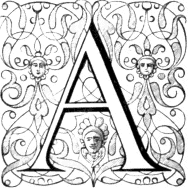
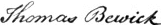
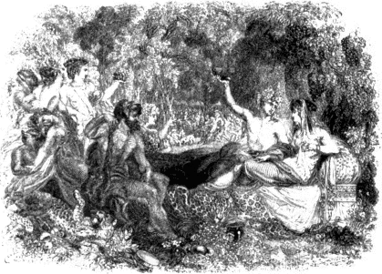
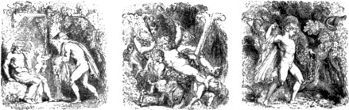

lthough wood engraving had fallen into almost utter neglect by the end of the seventeenth century, and continued in a languishing state for many years afterward, yet the art was never lost, as some persons have stated; for both in England and in France a regular succession of wood engravers can be traced from 1700 to the time of Thomas Bewick. The cuts which appear in books printed in Germany, Holland, and Italy during the same period, though of very inferior execution, sufficiently prove that the art continued to be practised in those countries.
The first English book of this period which requires notice is an edition of Howel’s Medulla Historiæ Anglicanæ, octavo, printed at London in 1712.VII.1 There are upwards of sixty wood-cuts in this work, 447 and the manner in which they are executed sufficiently indicates that the engraver must have either been self-taught or the pupil of a master who did not understand the art. The blocks have, for the most part, been engraved in the manner of copper-plates; most of the lines, which a regular wood engraver would have left in relief, are cut in intaglio, and hence in the impression they appear white where they ought to be black. The bookseller, in an address to the reader, thus proceeds to show the advantages of those cuts, and to answer any objection that might be urged against them on account of their being engraved on wood. “The cuts added in this edition are intended more for use than show. The utility consists in these two particulars. 1. To make the better impression on the memory. 2. To show more readily when the notable passages in our history were transacted; which, without the knowledge of the names of the persons, are not to be found out, by even the best indexes. As for example: In what reign was it that a rebellious rout, headed by a vile fellow, made great ravage, and appearing in the King’s presence with insolence, their captain was stabbed upon the spot by the Lord-Mayor? Here, without knowing the names of some of the parties, which a world of people are ignorant of, the story is not to be found by an index; but by the help of the cut, which catches the eye, is soon discovered. We all have heard of the piety of one of our queens who sucked the poison out of her husband’s wound, but very few remember which of them it was, which the cut presently shows. The same is to be said of all the rest, since we have chosen only such things as are NOTABILIA in the history to describe in our sculptures.—And if it be objected that the graving is in wood, and not in copper, which would be more beautiful; we answer, that such would be much more expensive too. And we were willing to save the buyer’s purse; especially since even the best engraving would not better serve the purposes above-said.”
Though no mark is to be found on any of those cuts, I am inclined to think that they were executed by Edward Kirkall, whose name appears as the engraver of the copper-plate frontispiece to the book. The accounts which we have of Kirkall are extremely unsatisfactory. Strutt says that he was born at Sheffield in 1695; and that, visiting London in search of improvement, he was for some time employed in graving arms, stamps, and ornaments for books. It is, however, likely that he was born previous to 1695; for the frontispiece to Howel’s 448 Medulla is dated 1712, when, if Strutt be correct, Kirkall would be only seventeen. That he engraved on wood, as well as on copper, is unquestionable; and I am inclined to think that he either occasionally engraved small ornaments and head-pieces on type-metal for the use of printers, or that casts in this kind of metal were taken from some of his small cuts.VII.2
The head-pieces and ornaments in Maittaire’s Latin Classics, duodecimo, published by Tonson and Watts, 1713, were probably engraved on wood by Kirkall, as his initials, E. K., are to be found on one of the tail-pieces. Papillon speaks rather favourably of those small cuts, though he objects to the uniformity of the tint and the want of precision in the more delicate parts of the figures, such as the faces and hands. He notices the tail-piece with the mark E. K. as one of the best executed; and he suspects that these letters were intended for the name of an English painter—called Ekwits, to the best of his recollection,—who “taught the arts of painting and of engraving on wood to J. B. Jackson, so well known to the printers of Paris about 1730 from his having supplied them with so large a stock of indifferent cuts.”VII.3
The cuts in Croxall’s edition of Æsop’s Fables, first published by J. and R. Tonson and J. Watts, in 1722, were, in all probability, executed by the same person who engraved the head-pieces and other ornaments in Maittaire’s Latin Classics, printed for the same publishers about nine years before; and there is reason to believe that this person, as has been previously observed, was E. Kirkall. Bewick, in the introduction prefixed to his “Fables of Æsop and others,” first printed in 1818, says that the cuts in Croxall’s edition were “on metal, in the manner of wood.” He, however, gives no reason for this opinion, and I very much question its correctness. After a careful inspection I have not been able to discover any peculiar mark which should induce me to suppose that they had been engraved on metal; and without some such mark indicating that the engraved surface had been fastened to the block to raise it to the height of the type, I consider it impossible for any person to decide merely from the appearance of the impressions that those cuts were printed from a metallic surface. The difference, in point of impression, between a wood-cut and an engraving on type-metal in the same manner, or a cast in type-metal from a wood-cut, is not to be distinguished. A wood engraver of the present day, when casts 449 from wood-cuts are so frequently used instead of the original engraved block, decides that a certain impression has been from a cast, not in consequence of any peculiarity in its appearance denoting that it is printed from a metallic surface, but from certain marks—little flaws in the lines and minute “picks”—which he knows are characteristic of a “cast.” When a cast, however, has been well taken, and afterwards carefully cleared out with the graver, it is frequently impossible to decide that the impression has been taken from it, unless the examiner have also before him an impression from the original block with which it may be compared; and even then, a person not very well acquainted with the practice of wood engraving and the method of taking casts from engraved wood-blocks, will be extremely liable to decide erroneously.
Though it is by no means improbable that a person like Kirkall, who had been accustomed to engrave on copper, might attempt to engrave on type-metal in the same manner as on wood, and that he might thus execute a few small head-pieces and flowered ornaments, yet I consider it very unlikely that he should continue to prefer metal for the purpose of relief engraving after he had made a few experiments. The advantages of wood over type-metal are indeed so great, both as regards clearness of line and facility of execution, that it seems incredible that any person who had tried both materials should hesitate to give the preference to wood. If, however, the cuts in Croxall’s Æsop were really engraved on metal in the manner of wood, they are, as a series, the most extraordinary specimens of relief engraving for the purpose of printing, that have ever been executed. When Bewick stated that those cuts were engraved on metal, I am inclined to think that he founded his opinion rather on popular report than on close and impartial examination of the cuts themselves; and it is further to be observed that Thomas Bewick, with all his merits as a wood engraver, was not without his weaknesses as a man; he was not unwilling that people should believe that the art of wood engraving was lost in this country, and that the honour of its re-discovery, as well as of its subsequent advancement, was due to him. Though he was no doubt sincere in the opinion which he gave, yet those who know him are well aware that he would not have felt any pleasure in calling the attention of his readers to a series of wood-cuts executed in England upwards of thirty years before he was born, and which are not much inferior—except as regards the animals—to the cuts of fables engraved by himself and his brother previous to 1780.VII.4 The cuts in Croxall’s Æsop not only 450 display great improvement in the engraver, supposing him to be the same person that executed the head-pieces and ornaments in Maittaire’s Latin Classics printed in 1713, but are very much superior to any cuts contained in works of the same kind printed in France between 1700 and 1760.VII.5
Many of the subjects in Croxall are merely reversed copies of engravings on copper by S. Le Clerc, illustrative of a French edition 451 of Æsop’s Fables published about 1694. The first of the preceding cuts is a fac-simile of one of Le Clerc’s engravings; and the second is a copy of the same subject as it appears in Croxall. The fable to which they both relate is the Fox and the Goat.
The above cut is by no means one of the best in Croxall: it has not been selected as a specimen of the manner in which those cuts are executed, but as an instance of the closeness with which the English wood-cuts have been copied from the French copper-plates. In several of the cuts in Bewick’s Fables of Æsop and others, the arrangement and composition appear to have been suggested by those in Croxall; but in every instance of this kind the modern artist has made the subject his own by the superior manner in which it is treated: he restores to the animals their proper forms, represents them acting their parts as described in the fable, and frequently introduces an incident or sketch of landscape which gives to the whole subject a natural character. The following copy of the Fox and Goat, in the Fables of Æsop and others, 1818-1823, will serve to show how little the modern artist has borrowed in such instances from the cuts in Croxall, and how much has been supplied by himself.
Between 1722 and 1724, Kirkall published by subscription twelve chiaro-scuros engraved by himself, chiefly after designs by old Italian masters. In those chiaro-scuros the outlines and the darker parts of the figures are printed from copper-plates, and the sepia-coloured tints afterwards impressed from wood-blocks; though they possess considerable merit, they are deficient in spirit, and will not bear a comparison with the chiaro-scuros executed by Ugo da Carpi and other early 452 Italian wood engravers. Most of them are too smooth, and want the bold outline and vigorous character which distinguish the old chiaro-scuros: what Kirkall gained in delicacy and precision by the introduction of mezzotint, he lost through the inefficient engraving of the wood-blocks. One of the largest of those chiaro-scuros is a copy of one of Ugo da Carpi’s—Æneas carrying his father on his shoulders—after a design by Raffaele. In Walpole’s Catalogue of Engravers, a notice of Kirkall’s “new method of printing, composed of etching, mezzotinto, and wooden stamps,” concludes with the following passage: “He performed several prints in this manner, and did great justice to the drawing and expression of the masters he imitated. This invention, for one may call it so, had much success, much applause, no imitators.—I suppose it is too laborious and too tedious. In an opulent country where there is great facility of getting money, it is seldom got by merit. Our artists are in too much hurry to gain it, or deserve it.”
About 1724 Kirkall published seventeen views of shipping, from designs by W. Vandevelde, which he also called “prints in chiaro-scuro.” They have, however, no just pretensions to the name as it is usually understood when applied to prints, for they are merely tinted engravings worked off in a greenish-blue ink. These so-called chiaro-scuros are decided failures.
Kirkall engraved, on copper, the plates in Rowe’s translation of Lucan’s Pharsalia, folio, published by Tonson, 1718; the plates for an edition of Inigo Jones’s Stonehenge, 1725; and a frontispiece to the works of Mrs. Eliza Haywood, which is thus alluded to in the Dunciad:
“See in the circle next Eliza placed,
Two babes of love close clinging to her waist;
Fair as before her works she stands confest,
In flowers and pearls by bounteous Kirkall drest.”
A considerable number of rude and tasteless ornaments and head-pieces, with the mark F. H., engraved on wood, are to be found in English books printed between 1720 and 1740. Several of them have been cast in type-metal,VII.6 as is evident from the marks of the pins, in the impressions, by which they have been fastened to the blocks; the same head-piece or ornament is also frequently found in books printed in the same year by different printers. Some of the best headings and tail-pieces of this period occur in a volume of “Miscellaneous Poems, original and translated, by several hands. Published 453 by Mr. Concanen,” London, printed for J. Peele, octavo, 1724. The subjects are, Apollo with a lyre; Minerva with a spear and shield; two men sifting corn; Hercules destroying the hydra; and a man with a large lantern. They are much superior to any cuts of the same kind with the mark F. H.; and from the manner in which they are executed, I am inclined to think that they are the work of the person who engraved the cuts in Croxall’s Æsop. The following is a fac-simile of one of the best of the cuts that I have ever seen with the mark F. H. It occurs as a tail-piece at the end of the preface to “Strephon’s Revenge: A Satire on the Oxford Toasts,” octavo, London, 1724.VII.7
John Baptist Jackson, an English wood engraver, was, according to Papillon, a pupil of the person who engraved the small head-pieces and ornaments in Maittaire’s Latin Classics, published by Tonson and Watts in 1713; and as the cuts in Croxall’s Æsop were probably engraved by the same person, as has been previously observed, it is not unlikely that Jackson, as his apprentice, might have some share in their execution. Though these cuts were much superior to any that had appeared in England for about a hundred years previously, wood engraving seems to have received but little encouragement. Probably from want of employment in his own country, Jackson proceeded to Paris, where he remained several years, chiefly employed in engraving head-pieces and ornaments for the booksellers. Papillon, who seems to have borne no good-will towards Jackson, thus speaks of him in the first volume of his “Traité de la Gravure en Bois.”
454“J. Jackson, an Englishman, who resided several years in Paris, might have perfected himself in wood engraving, which he had learnt of an English painter, as I have previously mentioned, if he had been willing to follow the advice which it was in my power to give him. Having called on me, as soon as he arrived in Paris, to ask for work, I for several months gave him a few things to execute in order to afford him the means of subsistence. He, however, repaid me with ingratitude; he made a duplicate of a flowered ornament of my drawing, which he offered, before delivering to me the block, to the person for whom it was to be engraved. From the reproaches that I received, on the matter being discovered, I naturally declined to employ him any longer. He then went the round of the printing-offices in Paris, and was obliged to engrave his cuts without order, and to offer them for almost nothing; and many of the printers, profiting by his distress, supplied themselves amply with his cuts. He had acquired a certain insipid taste which was not above the little mosaics on snuff-boxes; and with ornaments of this kind, after the manner of several other inferior engravers, he surcharged his works. His mosaics, however delicately engraved, are always deficient in effect, and display the engraver’s patience rather than his talent; for the other parts of the cut, consisting of delicate lines without tints or a gradation of light and shade, want that force which is necessary to render the whole striking. Such wood engravings, however deficient in this respect, are yet admired by printers of vulgar taste, who foolishly pretend that they most resemble copper-plates, and that they print better than cuts of a picturesque character, and containing a variety of tints.
“Jackson, being obliged, through destitution, to leave Paris, where he could get nothing more to do, travelled in France; and afterwards, being disgusted with his profession, he accompanied a painter to Rome, from whence he went to Venice, where, as I am informed, he married, and subsequently returned to England, his native country.”VII.8
Though Papillon speaks disparagingly of Jackson, the latter was at least as good an engraver as himself. Jackson appears to have visited Paris not later than 1726, for Papillon mentions a vignette and a large letter engraved by him in that year for a Latin and French dictionary, printed in 1727 by the brothers Barbou; and it is likely that he remained there till about 1731. In an Italian translation of the Lives of the Twelve Cæsars, printed there in quarto 1738, there is a large ornamental title-page of his engraving; and in the same year he engraved a chiaro-scuro of Christ taken down from the cross, from a 455 painting by Rembrandt,VII.9 in the possession of Joseph Smith, Esq. the British consul at Venice, a well-known collector of pictures and other works of art. Between 1738 and 1742, when residing at Venice, he also engraved twenty-seven large chiaro-scuros,—chiefly after pictures by Titian, G. Bassano, Tintoret, and P. Veronese,—which were published in a large folio volume in the latter year. They are very unequal in point of merit; some of them appearing harsh and crude, and others flat and spiritless, when compared with similar productions of the old Italian wood engravers. One of the best is the Martyrdom of St. Peter Dominicanus, after Titian, with the date 1739; the manner in which the foliage of the trees is represented is particularly good. On his return to England he seems to have totally abandoned the practice of wood engraving in the ordinary manner for the purpose of illustrating or ornamenting books; for I have not been able to discover any English wood-cut of the period that either contains his mark, or seems, from its comparative excellence, to have been of his engraving. Finding no demand in this country for wood-cuts, he appears to have tried to render his knowledge of engraving in chiaro-scuro available for the purpose of printing paper-hangings. In an “Essay on the Invention of Engraving and Printing in Chiaro Oscuro,”VII.10 published in his name in 1754, we learn that he was then engaged in a manufacture of this kind at Battersea. The account given in this essay of the origin and progress of chiaro-scuro engraving is frequently incorrect; and from several of the statements which it contains, it would seem that the writer was very imperfectly acquainted with the works of his predecessors and contemporaries in the same department of wood engraving. From the following passage, which is to be found in the fifth page, it is evident that the writer was either ignorant of what had been done in the sixteenth and seventeenth centuries, and even in his own age, or that he was wishful to enhance the merit of Mr. Jackson’s process by concealing what had recently been done in the same manner by others. “After having said all this, it may seem highly improper to give to Mr. Jackson the merit of inventing this art; but let me be permitted to say, that an art recovered is less little than an art invented. The works of the former artists remain indeed; but the manner in which they were done is entirely lost: the inventing then the manner is really due to this latter undertaker, since no writings, or other remains, are to be found by 456 which the method of former artists can be discovered, or in what manner they executed their works; nor, in truth, has the Italian method since the beginning of the sixteenth century been attempted by any one except Mr. Jackson.” What is here called the “Italian method,” that is, the method of executing chiaro-scuros entirely on wood, was practised in France at the end of the seventeenth century: and Nicholas Le Sueur had engraved several cuts in this manner about 1730, the very time when Jackson was living in Paris. The principles of the art had also been applied in France to the execution of paper-hangings upwards of fifty years before Jackson attempted to establish the same kind of manufacture in England. Not a word is said of the chiaro-scuros of Kirkall,VII.11 from whom it is likely that Jackson first acquired his knowledge of chiaro-scuro engraving: with the exception of the outlines and some other parts in these chiaro-scuros being executed in mezzotint, the printing of the rest from wood-blocks is precisely the same as in the Italian method.
The Essay contains eight prints illustrative of Mr. Jackson’s method; four are chiaro-scuros, and four are printed in “proper colours,” as is expressed in the title, in imitation of drawings. They are very poorly executed, and are very much inferior to the chiaro-scuros engraved by Jackson when residing at Venice. The prints in “proper colours” are egregious failures. The following notices respecting Mr. Jackson are extracted from the Essay in question.
“Certainly Mr. Jackson, the person of whom we speak, has not spent less time and pains, applied less assiduity, or travelled to fewer distant countries in search of perfecting his art, than other men; having passed twenty years in France and Italy to complete himself in drawing after the best masters in the best schools, and to see what antiquity had most worthy the attention of a student in his particular pursuits. After all this time spent in perfecting himself in his discoveries, like a true lover of his native country, he is returned with a design to communicate all the means which his endeavours can contribute to enrich the land where he drew his first breath, by adding to its commerce, and employing its inhabitants; and yet, like a citizen of it, he would willingly enjoy some little share of those advantages before he leaves this world, which he must leave behind him to his countrymen when he shall be no more.”
“During his residence at Venice, where he made himself perfect 457 in the art which he professes, he finished many works well known to the nobility and gentry who travelled to that city whilst he lived in it.—Mr. Frederick, Mr. Lethuillier, and Mr. Smith, the English consul at Venice, encouraged Mr. Jackson to undertake to engrave in chiaro-oscuro, blocks after the most capital pictures of Titian, Tintoret, Giacomo Bassano, and Paul Veronese, which are to be found in Venice, and to this end procured him a subscription. In this work may be seen what engraving on wood will effectuate, and how truly the spirit and genius of every one of those celebrated masters are preserved in the prints.
“During his executing this work he was honoured with the encouragement of the Right Honourable the Marquis of Hartington, Sir Roger Newdigate, Sir Bouchier Wrey, and other English gentlemen on their travels at Venice, who saw Mr. Jackson drawing on the blocks for the print after the famous picture of the Crucifixion painted by Tintoret in the albergo of St. Roche. Those prints may now be seen at his house at Battersea.—Not content with having brought his works in chiaro-oscuro to such perfection, he attempted to print landscapes in all their original colours; not only to give to the world all the outline light and shade, which is to be found in the paintings of the best masters, but in a great degree their very manner and taste of colouring. With this intent he published six landscapes,VII.12 which are his first attempt in this nature, in imitation of painting in aquarillo or water-colours; which work was taken notice of by the Earl of Holderness, then ambassador extraordinary to the republic of Venice; and his excellency was pleased to permit the dedication of those prints to him, and to encourage this new attempt of printing pictures with a very particular and very favourable regard, and to express his approbation of the merit of the inventor.”
John Michael Papillon, one of the best French wood engravers of his age, was born in 1698. His grandfather and his father, as has been previously observed, were both wood engravers. In 1706, when only eight years old, he secretly made his first essay in wood engraving; and when only nine, his father, who had become aware of his amusing himself in this manner, gave him a large block to engrave, which he appears to have executed to his father’s satisfaction, though he had previously received no instructions in the art.VII.13 The block was intended 458 for printing paper-hangings, the manufacture of which was his father’s principal business. Though until the time of his father’s death, which happened in 1723, Papillon appears to have been chiefly employed in such works, and in hanging the papers which he had previously engraved, he yet executed several vignettes and ornaments for the booksellers, and sedulously endeavoured to improve himself in this higher department of his business.
Shortly after the death of his father he married; and, having given up the business of engraving paper-hangings, he laboured so hard to perfect himself in the art of designing and engraving vignettes and ornaments for books, that his head became affected; and he sometimes displayed such absence of mind that his wife became alarmed, fancying that “he no longer loved her.” On his assuring her that his behaviour was the result of his anxiety to improve himself in drawing and engraving on wood, and to write something about the art, she encouraged him in his purpose, and aided him with her advice, for, as she was the daughter of a clever man, M. Chaveau, a sculptor, and had herself made many pretty drawings on fans, she had some knowledge of design. Papillon’s fits of absence, however, though they may have been proximately induced by close application and anxiety about his success in the line to which he intended to apply himself in future, appear to have originated in a tendency to insanity, which at a later period displayed itself in a more decided manner. In 1759, in consequence of a determination of blood to the head, as he says, through excessive joy at seeing his only daughter, who had lived from the age of four years with her uncle, combined with a recollection of his former sorrows, his mind became so much disordered that it was necessary to send him to an hospital, where, through repeated bleedings and other remedies, he seems to have speedily recovered. He mentions that in the same year, four other engravers were attacked by the same malady, and that only one of them regained his senses.VII.14
Papillon’s endeavours to improve himself were not unsuccessful; the cuts which he engraved about 1724, though mostly small, possess 459 considerable merit; they are not only designed with much more feeling than the generality of those executed by other French engravers of the period, but are also much more effective, displaying a variety of tint and a contrast of light and shade which are not to be found in the works of his contemporaries. In 1726, in order to divert his anxiety and to bring his cuts into notice, he projected Le petit Almanach de Paris, which subsequently was generally known as “Le Papillon.” The first that he published was for the year 1727; and the wood-cuts which it contained equally attracted the attention of the public and of connoisseurs. Monsieur Colombat, the editor of the Court Calendar, spoke highly of the cut for the mouth of January; the cross-hatchings, he said, were executed in the first style of wood engraving, and he kindly predicted to Papillon that he would one day excel in his art. From this time he seems to have no longer had any doubt of his own abilities, but, on the contrary, to have entertained a very high opinion of them. He appears to have considered wood engraving as the highest of all the graphic arts, and himself as the greatest of all its professors, either ancient or modern.
From this, to him, memorable epoch,—the publication of “Le petit Almanach de Paris,” with cuts by Papillon,—he appears to have been seldom without employment, for in the Supplement to the “Traité de la Gravure en Bois,” he mentions that in 1768, the “Collection of the Works of the Papillons,” presented by him to the Royal Library, contained upwards of five thousand pieces of his own engraving. This “Recueil des Papillons,” which he seems to have considered as a family monument “ære perennius,” is perpetually referred to in the course of his work. It consisted of four large folio volumes containing specimens of wood engravings executed by the different members of the Papillon family for three generations—his grandfather, his father, his uncle, his brother, and himself.
Papillon was employed not only by the booksellers of his own country, but also by those of Holland. A book, entitled “Historische School en Huis-Bybel,” printed at Amsterdam in 1743, contains two hundred and seventeen cuts, all of which appear to have been either engraved by Papillon himself, or under his superintendence. His name appears on several of them, and they are all engraved in the same style. From a passage in the dedication, it seems likely that they had appeared in a similar work printed at the same place a few years previously. They are generally executed in a coarser manner than those contained in Papillon’s own work, but the style of engraving and general effect are the same. The cut on the next page is a copy of the first, which is one of the best in the work. To the left is 460 Papillon’s name, engraved, as was customary with him, in very small letters, with the date, 1734.
Papillon’s History of Wood Engraving, published in 1766, in two octavo volumes, with a Supplement,VII.15 under the title of “Traité Historique et Pratique de la Gravure en Bois,” is said to have been projected, and partly written, upwards of thirty years before it was given to the public. Shortly after his being admitted a member of the Society of Arts, in 1733, he read, at one of the meetings, a paper on the history and practice of wood engraving; and in 1735 the Society signified their approbation that a work written by him on the subject should be printed. It appears that the first volume of such a work was actually printed between 1736 and 1738, but never published. He does not explain why the work was not proceeded with at that time; and it would be useless to speculate on the possible causes of the interruption. He mentions that a copy of this volume was preserved in the Royal Library; and he charges Fournier the younger, who between 1758 and 1761 published three tracts on the invention of wood engraving and printing, with having availed himself of a portion of the historical information contained in this volume. The public, however, according to his own statement, gained by the delay; as he grew older he gained more knowledge of the history of the art, and “invented” several important improvements in his practice, all of which are embodied in his later work. In 1758 he also discovered the memoranda which he had made at Monsieur De Greder’s, in 1719 or 1720, relative to the interesting twins, 461 Alexander Alberic Cunio and his sister Isabella, who, about 1284, between the fourteenth and sixteenth years of their age, executed a series of wood engravings illustrative of the history of Alexander the Great.VII.16 However the reader may be delighted or amused by the romantic narrative of the Cunio, Papillon’s reputation as the historian of his art would most likely have stood a little higher had he never discovered those memoranda. They have very much the character of ill-contrived forgeries; and even supposing that he believed them, and printed them in good faith, his judgment must be sacrificed to save his honesty.
The first volume of Papillon’s work contains the history of the art; it is divided into two parts, the first treating of wood engraving for the purpose of printing in the usual manner from a single block, and the second treating of chiaro-scuro. He does not trace the progress of the art by pointing out the improvements introduced at different periods; he enumerates all the principal cuts that he had seen, without reference to their execution as compared with those of an earlier date; and, from his desire to enhance the importance of his art, he claims almost every eminent painter whose name or mark is to be found on a cut, as a wood engraver. He is in this respect so extremely credulous as to assert that Mary de Medici, Queen of Henry IV. of France, had occasionally amused herself with engraving on wood; and in order to place the fact beyond doubt he refers to a cut representing the bust of a female, with the following inscription: “Maria Medici. F. m.d.lxxxvii.” “The engraving,” he observes, with his usual bonhomie, “is rather better than what might be reasonably expected from a person of such quality; it contains many cross-hatchings, somewhat unequal indeed, and occasionally imperfect, but, notwithstanding, sufficiently well engraved to show that she had executed several wood-cuts before she had attempted this. I know more than one wood engraver—or at least calling himself such—who is incapable of doing the like.” In 1587, the date of this cut, Mary de Medici was only fourteen years old; and since its execution, according to Papillon, shows that she was then no novice in the art, she must have acquired her practical knowledge of wood engraving at rather an early age,—at least for a princess. Papillon never seems to have considered that F is the first letter of “Filia” as well as of “Fecit,” nor to have suspected that the cut was simply a portrait of Mary de Medici, and not a specimen of her engraving.
From the following passage in the preface, he seems to have been 462 aware that his including the names of many eminent painters in his list of wood engravers would be objected to. “Some persons, who entertain a preconceived opinion that many painters whom I mention have not engraved on wood, may perhaps dispute the works which I ascribe to them. Of such persons I have to request that they will not condemn me before they have acquainted themselves with my researches and examined my proofs, and that they will judge of them without prejudice or partiality.” The “researches” to which he alludes, appear to have consisted in searching out the names and marks of eminent painters in old wood-cuts, and his “proofs” are of the same kind as that which he alleges in support of his assertion that Mary de Medici had engraved on wood,—a fact which, as he remarks, “was unknown to Rubens.” The historical portion of Papillon’s work is indeed little more than a confused catalogue of all the wood-cuts which had come under his observation; it abounds in errors, and almost every page affords an instance of his credulity.
In the second volume, which is occupied with details relative to the practice of the art, Papillon gives his instructions and enumerates his “inventions” in a style of complacent self-conceit. The most trifling remarks are accompanied by a reference to the “Recueil des Papillons;” and the most obvious means of effecting certain objects,—such means as had been regularly adopted by wood engravers for upwards of two hundred years previously, and such as in succeeding times have suggested themselves to persons who never received any instructions in the art,—are spoken of as important discoveries, and credit taken for them accordingly. One of his fancied discoveries is that of lowering the surface of a block towards the edges in order that the engraved lines in those parts may be less subject to the action of the plattin in printing, and consequently lighter in the impression. The Lyons Dance of Death, 1538, affords several instances of blocks lowered in this manner, not only towards the edges, but also in the middle of the cut, whenever it was necessary that certain delicately engraved lines should be lightly printed, and thus have the appearance of gradually diminishing till their extremities should scarcely be distinguishable from the paper on which they are impressed. Numerous instances of this practice are frequent in wood-cuts executed from 1540 to the decline of the art in the seventeenth century. Lowering was also practised by the engraver of the cuts in Croxall’s Æsop; by Thomas Bewick, who acquired a knowledge of wood engraving without a master; and by the self-taught artist who executed the cuts in Alexander’s Expedition down the Hydaspes, a poem by Dr. Thomas Beddoes, printed in 1792, but never published.VII.17 As the 463 same practice has recently been claimed as an “invention,” it would seem that some wood engravers are either apt to ascribe much importance to little things, or are singularly ignorant of what has been done by their predecessors. Such an “invention,” though unquestionably useful, surely does not require any particular ingenuity for its discovery; such “discoveries” every man makes for himself as soon as he feels the want of that which the so-called invention will supply. The man who pares the cork of a quart bottle in order to make it fit a smaller one is, with equal justice, entitled to the name of an inventor, provided he was not aware of the thing having been done before: such an “adaptation of means to the end” cannot, however, be considered as an effort of genius deserving of public commendation.
In Papillon’s time it was not customary with French engravers on wood to have the subject perfectly drawn on the block, with all the lines and hatchings pencilled in, and the effect and the different tints indicated either in pencil or in Indian ink, as is the usual practice in the present day. The design was first drawn on paper; from this, by means of tracing paper, the engraver made an outline copy on the block; and, without pencilling in all the lines or washing in the tints, he proceeded to “translate” the original, to which he constantly referred in the progress of his work, in the same manner as a copper-plate engraver does to the drawing or painting before him. Papillon perceived the disadvantages which resulted from this mode of proceeding; and though he still continued to make his first drawing on paper, he copied it more carefully and distinctly on the block than was usual with his contemporaries. He was thus enabled to proceed with greater certainty in his engraving; what he had to effect was immediately before him, and it was no longer necessary to refer so frequently to the original. To the circumstance of the drawings being perfectly made on the block, Papillon ascribes in a great measure the excellence of the old wood engravings of the time of Durer and Holbein.
Papillon, although always inclined to magnify little things connected with wood engraving, and to take great credit to himself for trifling “inventions,” was yet thoroughly acquainted with the practice of his art. The mode of thickening the lines in certain parts of a cut, after it has 464 been engraved, by scraping them down, was frequently practised by him, and he explains the manner of proceeding, and gives a cut of the tools required in the operation.VII.18 As Papillon, previous to the publication of his book, had contributed several papers on the subject of wood engraving to the famed Encyclopédie, he avails himself of the second volume of the Traité to propose several additions and corrections to those articles. The following definition proposed to be inserted in the Encyclopédie, after the article Gratuit, will afford some idea of the manner in which he is accustomed to speak of his “inventions.” The term which he explains is “Gratture ou Grattage,” literally, “Scraping,” the practice just alluded to. “This is, according to the new manner of engraving on wood, the operation of skilfully and carefully scraping down parts in an engraved block which are not sufficiently dark, in order to give them, as may be required, greater strength, and to render the shades more effective. This admirable plan, utterly unknown before, was accidentally discovered in 1731 by M. Papillon, by whom the art of wood engraving is advanced to a state tending to perfection, and approaching more and more towards the beauty of engraving on copper.” The tools used by Papillon to scrape down the lines of an engraved block, and thus render them thicker and, consequently, the impression darker, differ considerably in shape from those used for the same purpose by modern wood engravers in England. This tool now principally used is something like a copper-plate engraver’s burnisher, and occasionally a fine and sharp file is employed.
In Papillon’s time the French wood engravers appear to have held the graver in the manner of a pen, and in forming a line to have cut towards them as in forming a down-stroke in writing, and to have engraved on the longitudinal, and not the cross section of the wood. Modern English wood engravers, having the rounded handle of the graver supported against the hollow of the hand, and directing the blade by means of the fore-finger and thumb, cut the line from them; and always engrave on the cross section of the wood. Papillon mentions box, pear-tree, apple-tree, and the wood of the service-tree, as the best for the purposes of engraving: box was generally used for the smaller and finer cuts intended for the illustration or ornament of books; the larger cuts, in which delicacy was not required, were mostly engraved on pear-tree wood. Apple-tree wood was principally used by the wood engravers of Normandy. Next to box, Papillon prefers the wood of the service-tree. The box brought from Turkey, though of larger size, he considers inferior to that of Provence, Italy, or Spain.
465Although Papillon’s modus operandi differs considerably from that of English wood engravers of the present day, I am not aware of any supposed discovery in the modern practice of the art that was not known to him. The methods of lowering a block in certain parts before drawing the subject on it, and of thickening the lines, and thus getting more colour, by scraping the surface of the cut when engraved, were, as has been observed, known to him; he occasionally introduced cross-hatchings in his cuts;VII.19 and in one of his chapters he gives instructions how to insert a plug in a block, in order to replace a part which had either been spoiled in the course of engraving or subsequently damaged. One of the improvements which he suggested, but did not put in practice, was a plan for engraving the same subject on two, three, or four blocks, in order to obtain cross-hatchings and a variety of tints with less trouble than if the subject were entirely engraved on the same block. Such cuts were not to be printed as chiaro-scuros, but in the usual manner, with printer’s ink. It is worthy of observation that Bewick in the latter part of his life had formed a similar opinion of the advantages of engraving a subject on two or more blocks, and thus obtaining with comparative ease such cross-lines and varied tints as could only be executed with great difficulty on a single block. He, however, proceeded further than Papillon, for he began to engrave a large cut which he intended to finish in this manner; and he was so satisfied that the experiment would be successful, that when the pressman handed to him a proof of the first block, he exclaimed, “I wish I was but twenty years younger!”
Papillon, in his account of the practice of the art, explains the manner of engraving and printing chiaro-scuros; and in illustration of the process he gives a cut executed in this style, together with separate impressions from each of the four blocks from which it is printed. There is also another cut of the same kind prefixed to the second part of the first volume, containing the history of engraving in chiaro-scuro. Scarcely anything connected with the practice of wood engraving appears to have escaped his notice. He mentions the effect of the breath in cold weather as rendering the block damp and the drawing less distinct; and he gives in one of his cuts the figure of a “mentonnière,”—that is to say, a piece of quilted linen, like the pad used by women to keep their bonnets cocked up,—which, being placed 466 before the mouth and nostrils, and kept in its place by strings tied behind the head, screened the block from the direct action of the engraver’s breath.
He frequently complains of the careless manner in which wood-cuts were printed;VII.20 but from the following passage we learn that the inferiority of the printed cuts when compared with the engraver’s proofs did not always proceed from the negligence of the printer. “Some wood engravers have the art of fabricating proofs of their cuts much more excellent and delicate than they fairly ought to be; and the following is the manner in which they contrive to obtain tolerably decent proofs from very indifferent engravings. They first take two or three impressions, and then, to obtain one to their liking, and with which they may deceive their employers, they only ink the block on those places which ought to be dark, leaving the distances and lighter parts without any ink, except what remained after taking the previous impressions. The proof which they now obtain appears extremely delicate in those parts which were not properly inked; but when they come to be printed in a page with type, the impression is quite different from the proof which the engraver delivers with the blocks; there is no variety of tint, all is hard, and the distance is sometimes darker than objects in the fore-ground. I run no great risk in saying that all the three Le Sueurs have been accustomed to practise this deception.”VII.21
All the cuts in Papillon’s work, except the portrait prefixed to the first volume,VII.22 are his own engraving, and, for the most part, from his own designs. The most of the blocks were lent to the author by the different persons for whom he had engraved them long previous to the appearance of his work.VII.23 They are introduced as ornaments at the beginning and end of the chapters; but though they may enable the reader to judge of Papillon’s abilities as a designer and engraver on wood, beyond this they do not in the least illustrate the progress of the art. 467 The execution of some of the best is extremely neat; and almost all of them display an effect—a contrast of black and white—which is not to be found in any other wood-cuts of the period. A few of the designs possess considerable merit, but in by far the greater number simplicity and truth are sacrificed to ornament and French taste. Whatever may be Papillon’s faults as a historian of the art, he deserves great credit for the diligence with which he pursued it under unfavourable circumstances, and for his endeavours to bring it into notice at a time when it was greatly neglected. His labours in this respect were, however, attended with no immediate fruit. He died in 1776, and his immediate successors do not appear to have profited by his instructions. The wood-cuts executed in France between 1776 and 1815 are generally much inferior to those of Papillon; and the recent progress which wood engraving has made in that country seems rather to have been influenced by English example than by his precepts.
Nicholas Le Sueur—born 1691, died 1764,—was, next to Papillon, the best French wood engraver of his time. His chiaro-scuros, printed entirely from wood-blocks, are executed with great boldness and spirit, and partake more of the character of the earlier Italian chiaro-scuros than any other works of the same kind engraved by his contemporaries.VII.24 He chiefly excelled in the execution of chiaro-scuros and large cuts; his small cuts are of very ordinary character; they are generally engraved in a hard and meagre style, want variety of tint, and are deficient in effect.
P. S. Fournier, the younger, a letter-founder of considerable reputation,—born at Paris 1712, died 1768,—occasionally engraved on wood. Papillon says that he was self-taught; and that he certainly would have made greater progress in the art had he not devoted himself almost exclusively to the business of type-founding. Monsieur Fournier is, however, better known as a writer on the history of the art than as a practical wood engraver. Between 1758 and 1761 he published three tracts relating to the origin and progress of wood engraving, and the invention of typography.VII.25 From these works it is evident that, though 468 he takes no small credit to himself for his practical knowledge of wood engraving and printing, he was very imperfectly acquainted with his subject. They abound in errors which it is impossible that any person possessing the knowledge he boasts of should commit, unless he had very superficially examined the books and cuts on which he pronounces an opinion. He seems indeed to have thought that, from the circumstance of his being a wood engraver and letter-founder, his decisions on all doubtful matters in the early history of wood engraving and printing should be received with implicit faith. Looking at the comparatively small size of his works, no writer, not even Papillon himself, has committed so many mistakes; and his decisions are generally most peremptory when utterly groundless or evidently wrong. He asserts that Faust and Scheffer’s Psalter, 1457-1459, is printed from moveable types of wood, and that the most of the earliest specimens of typography are printed from the same kind of types; and in the fulness of his knowledge he also declares that the text of the Theurdank is printed not from types, but from engraved wood-blocks. Like Papillon, he seems to have possessed a marvellous sagacity in ferreting out old wood engravers. He says that Andrea Mantegna engraved on wood a grand triumph in 1486; that Sebastian Brandt engraved in 1490 the wood-cuts in the Ship of Fools,VII.26 after the designs of J. Locher; and that Parmegiano 469 executed several wood-cuts after designs by Raffaele. He decides positively that Albert Durer, Lucas Cranach, Titian, and Holbein were wood engravers, and, like Papillon, he includes Mary de Medici in the list. Papillon appears to have had good reason to complain that Fournier had availed himself of his volume printed in 1738. His taste appears to have been scarcely superior to his knowledge and judgment: he mentions a large and coarsely engraved cut of the head of Christ as one of the best specimens of Albert Durer’s engraving; and he says that Papillon’s cuts are for excellence of design and execution equal to those of the greatest masters!
From a passage in one of Fournier’s tracts—Remarques Typographiques, 1761,—it is evident that wood engraving was then greatly neglected in Germany. It relates to the following observation of M. Bär’s, almoner of the Swedish chapel at Paris, on the length of time necessary to engrave a number of wooden types sufficient to print such a work as Faust and Scheffer’s Psalter: “M. Schœpflin declares that, by the general admission of all experienced persons, it would require upwards of six years to complete such a work in so perfect a manner.” The following is Fournier’s rejoinder: “To understand the value of this remark, it ought to be known that, so far from there being many experienced wood engravers to choose from, M. Schœpflin would most likely experience some difficulty in finding one to consult.” The wood-cuts which occur in German books printed between 1700 and 1760 are certainly of the most wretched kind; contemptible alike in design and execution. Some of the best which I have seen—and they are very bad—are to be found in a thin folio entitled “Orbis Literatus Germanico-Europaeus,” printed at Frankfort in 1737. They are cuts of the seals of all the principal colleges and academical foundations in Germany. The art in Italy about the same period was almost equally neglected. An Italian wood engraver, named Lucchesini, executed several cuts between 1760 and 1770. Most of the head-pieces and ornaments in the Popes’ Decretals, printed at Rome at this period, were engraved by him; and he also engraved the cuts in a Spanish book entitled “Letania Lauretana de la Virgen Santissima,” printed at Valencia in 1768. It is scarcely necessary to say that these cuts are of the humblest character.
Though wood engraving did not make any progress in England from 1722 to the time of Thomas Bewick, yet the art was certainly never lost in this country; the old stock still continued to put forth a branch—non deficit alter—although not a golden one. Two wood-cuts tolerably well executed, and which show that the engraver was acquainted with the practice of “lowering,” occur in a thin quarto, London, printed for H. Payne, 1760. The book and the cuts are thus noticed in Southey’s Life 470 of Cowper, volume I. page 50. The writer is speaking of the Nonsense Club, of which Cowper was a member.
“At those meetings of
Jest and youthful Jollity,
Sport that wrinkled Care derides,
And Laughter holding both his sides,
there can be little doubt that the two odes to Obscurity and Oblivion originated, joint compositions of Lloyd and Colman, in ridicule of Gray and Mason. They were published in a quarto pamphlet, with a vignette, in the title-page, of an ancient poet safely seated and playing on his harp; and at the end a tail-piece representing a modern poet in huge boots, flung from a mountain by his Pegasus into the sea, and losing his tie-wig in the fall.” The following is a fac-simile of the cut representing the poet’s fall. He seems to have been tolerably confident of himself, for, though the winged steed has no bridle, he is provided with a pair of formidable spurs.
The cuts in a collection of humorous pieces in verse, entitled “The Oxford Sausage,” 1764, are evidently by the same engraver, and almost every one of them affords an instance of “lowering.” At the foot of one of them, at page 89, the name “Lister” is seen; the subject is a bacchanalian figure mounted on a winged horse, which has undoubtedly been drawn from the same model as the Pegasus in Colman and Lloyd’s burlesque odes. In an edition of the 471 Sausage, printed in 1772, the name of “T. Lister” occurs on the title-page as one of the publishers, and as residing at Oxford. Although those cuts are generally deficient in effect, their execution is scarcely inferior to many of those in the work of Papillon; the portrait indeed of “Mrs. Dorothy Spreadbury, Inventress of the Oxford Sausage,” forming the frontispiece to the edition of 1772, is better executed than Monsieur Nicholas Caron’s votive portrait of Papillon, “the restorer of the art of wood engraving.”
In 1763, a person named S. Watts engraved two or three large wood-cuts in outline, slightly shaded, after drawings by Luca Cambiaso. Impressions of those cuts are most frequently printed in a yellowish kind of ink. About the same time Watts also engraved, in a bold and free style, several small circular portraits of painters. In Sir John Hawkins’s History of Music, published in 1776, there are four wood-cuts; and at the bottom of the largest—Palestrini presenting his work on Music to the Pope—is the name of the engraver thus: T. Hodgson. Sculp. Dr. Dibdin, in noticing this cut, in his Preliminary Disquisition on Early Engraving and Ornamental Printing, prefixed to his edition of the Typographical Antiquities, says that it was “done by Hodgson, the master of the celebrated Bewick.”VII.27 If by this it is meant that Bewick was the apprentice of Hodgson, or that he obtained from Hodgson his knowledge of wood engraving, the assertion is incorrect. It is, however, almost certain that Bewick, when in London in 1776, was employed by Hodgson, as will be shown in its proper place.
Having now given some account of wood engraving in its languishing state—occasionally showing symptoms of returning vigour, and then almost immediately sinking into its former state of depression—we at length arrive at an epoch from which its revival and progressive improvement may be safely dated. The person whose productions recalled public attention to the neglected art of wood engraving was
472This distinguished wood engraver, whose works will be admired as long as truth and nature shall continue to charm, was born on the 10th or 11th of August, 1753, at Cherry-burn, in the county of Northumberland, but on the south side of the Tyne, about twelve miles westward of Newcastle.
THE HOUSE IN WHICH BEWICK WAS BORN.
His father rented a small land-sale colliery at Mickley-bank, in the neighbourhood of his dwelling, and it is said that when a boy the future wood engraver sometimes worked in the pit. At a proper age he was sent as a day-scholar to a school kept by the Rev. Christopher Gregson at Ovingham, on the opposite side of the Tyne. The Parsonage House, in which Mr. Gregson lived, is pleasantly situated on the edge of a sloping bank immediately above the river; and many reminiscences of the place are to be found in Bewick’s cuts; the gate at the entrance is introduced, with trifling variations, in three or four different subjects; and a person acquainted with the neighbourhood will easily recognise in his tail-pieces several other little local sketches of a similar kind. In the time of the Rev. James Birkett, Mr. Gregson’s successor, Ovingham school had the character of being one of the best private schools in the county; and several gentlemen, whose talents reflect credit on their teacher, received their education there. In the following cut, representing a view of Ovingham from the south-westward, the Parsonage House, with its garden sloping down to the Tyne, is perceived immediately to the right of the clump of large trees. The bank on which those trees grow is known as the 473 crow-tree bank. The following lines, descriptive of a view from the Parsonage House, are from “The School Boy,” a poem, by Thomas Maude, A.M., who received his early education at Ovingham under Mr. Birkett.
PARSONAGE AT OVINGHAM.
“But can I sing thy simpler pleasures flown,
Loved Ovingham! and leave the chief unknown,—
Thy annual Fair, of every joy the mart,
That drained my pocket, ay, and took my childish heart?
Blest morn! how lightly from my bed I sprung,
When in the blushing east thy beams were young;
While every blithe co-tenant of the room
Rose at a call, with cheeks of liveliest bloom.
Then from each well-packed drawer our vests we drew,
Each gay-frilled shirt, and jacket smartly new.
Brief toilet ours! yet, on a morn like this,
Five extra minutes were not deemed amiss.
Fling back the casement!—Sun, propitious shine!
How sweet your beams gild the clear-flowing Tyne,
That winds beneath our master’s garden-brae,
With broad bright mazes o’er its pebbly way.
See Prudhoe! lovely in the morning beam:—
Mark, mark, the ferry-boat, with twinkling gleam,
Wafting fair-going folks across the stream.
Look out! a bed of sweetness breathes below,
Where many a rocket points its spire of snow;
And from the Crow-tree Bank the cawing sound
Of sable troops incessant poured around!
Well may each little bosom throb with joy!
On such a morn, who would not be a boy?”
Bewick’s school acquirements probably did not extend beyond English reading, writing, and arithmetic; for, though he knew a little 474 Latin, he does not appear to have ever received any instructions in that language. In a letter dated 18th April, 1803, addressed to Mr. Christopher Gregson,VII.28 London, a son of his old master, introducing an artist of the name of Murphy, who had painted his portrait, Bewick humorously alludes to his beauty when a boy, and to the state of his coat-sleeve, in consequence of his using it instead of a pocket-handkerchief. Bewick, it is to be observed, was very hard-featured, and much marked with the small-pox. After mentioning Mr. Murphy as “a man of worth, and a first-rate artist in the miniature line,” he thus proceeds: “I do not imagine, at your time of life, my dear friend, that you will be solicitous about forming new acquaintances; but it may not, perhaps, be putting you much out of the way to show any little civilities to Mr. Murphy during his stay in London. He has, on his own account, taken my portrait, and I dare say will be desirous to show you it the first opportunity: when you see it, you will no doubt conclude that T. B. is turning bonnyer and bonnyerVII.29 in his old days; but indeed you cannot help knowing this, and also that there were great indications of its turning out so long since. But if you have forgot our earliest youth, perhaps your brother P.VII.30 may help you to remember what a great beauty I was at that time, when the grey coat-sleeve was glazed from the cuff towards the elbows.” The words printed in Italics are those that are underlined by Bewick himself.
Bewick, having shown a taste for drawing, was placed by his father as an apprentice with Mr. Ralph Beilby, an engraver, living in Newcastle, to whom on the 1st of October 1767 he was bound for a term of seven years. Mr. Beilby was not a wood engraver; and his business in the copper-plate line was of a kind which did not allow of much scope for the display of artistic talent. He engraved copper-plates for books, when any by chance were offered to him; and he also executed brass-plates for doors, with the names of the owners handsomely filled up, after the manner of the old “niellos,” with black sealing-wax. He engraved crests and initials on steel and silver watch-seals; also on tea-spoons, sugar-tongs, and other articles of plate; and the engraving of numerals and ornaments, with the name of the maker, on clock-faces,—which were not then enamelled,—seems to have formed one of the chief branches of his very general business.VII.31
475Bewick’s attention appears to have been first directed to wood engraving in consequence of his master having been employed by the late Dr. Charles Hutton, then a schoolmaster in Newcastle, to engrave on wood the diagrams for his Treatise on Mensuration. The printing of this work was commenced in 1768, and was completed in 1770. The engraving of the diagrams was committed to Bewick, who is said to have invented a graver with a fine groove at the point, which enabled him to cut the outlines by a single operation.
The above is a fac-simile of one of the earliest productions of Bewick in the art of wood engraving. The church is intended for that of St. Nicholas, Newcastle.
Subsequently, and while he was still an apprentice, Bewick undoubtedly endeavoured to improve himself in wood engraving; but his progress does not appear to have been great, and his master had certainly very little work of this kind for him to do. He appears to have engraved a few bill-heads on wood; and it is not unlikely that the cuts in a little book entitled “Youth’s Instructive and Entertaining Story Teller,” first published by T. Saint, Newcastle, 1774, were executed by him before the expiration of his apprenticeship.
Bewick, at one period during his apprenticeship, paid ninepence a week for his lodgings in Newcastle, and usually received a brown loaf every week from Cherry-burn. “During his servitude,” says Mr. Atkinson, “he paid weekly visits to Cherry-burn, except when the river was so much swollen as to prevent his passage of it at Eltringham, when he vociferated his inquiries across the stream, and then returned to Newcastle.” This account of his being accustomed to shout his enquiries 476 across the Tyne first appeared in a Memoir prefixed to the Select Fables, published by E. Charnley, 1820. Mr. William Bedlington, an old friend of Bewick, once asked him if it were true? “Babbles and nonsense!” was the reply. “It never happened but once, and that was when the river had suddenly swelled before I could reach the top of the allers,VII.32 and yet folks are made to believe that I was in the habit of doing it.”
On the expiration of his apprenticeship he returned to his father’s house at Cherry-burn, but still continued to work for Mr. Beilby. About this time he seems to have formed the resolution of applying himself exclusively in future to wood engraving, and with this view to have executed several cuts as specimens of his ability. In 1775 he received a premium of seven guineas from the Society of Arts for a cut of the Huntsman and the Old Hound, which he probably engraved when living at Cherry-burn after leaving Mr. Beilby.VII.33 The following is a fac-simile of this cut, which was first printed in an edition of Gay’s Fables, published by T. Saint, Newcastle, 1779. Mr. Henry Bohn, the publisher of the present edition, happening to be in possession of the original cut, it is annexed on the opposite page.
In 1776, when on a visit to some of his relations in Cumberland,VII.34 he availed himself of the opportunity of visiting the Lakes; and in after-life 477 he used frequently to speak in terms of admiration of the beauty of the scenery, and of the neat appearance of the white-washed, slate-covered cottages on the banks of some of the lakes. His tour was made on foot, with a stick in his hand and a wallet at his back; and it has been supposed that in a tail-piece, to be found at page 177 of the first volume of his British Birds, first edition, 1797, he has introduced a sketch of himself in his travelling costume, drinking out of what he himself would have called the flipe of his hat. The figure has been copied in our ornamental letter T at page 471.
In the same year, 1776, he went to London, where he arrived on the 1st of October. He certainly did not remain more than a twelvemonth in London,VII.35 for in 1777 he returned to Newcastle, and entered into partnership with his former master, Mr. Ralph Beilby. Bewick—who does not appear to have been wishful to undeceive those who fancied that he was the person who rediscovered the “long-lost art of engraving on wood”VII.36—would never inform any of the good-natured friends, who fished for intelligence with the view of writing his life, of the works on which he was employed when in London. The faith of a believer in the story of Bewick’s re-discovering “the long-lost art” would have received too great a shock had he been told by Bewick himself that 478 on his arrival in London he found professors of the “long-lost art” regularly exercising their calling, and that with one of them he found employment.
There is every reason to believe that Bewick, when in London, was chiefly employed by T. Hodgson, most likely the person who engraved the four cuts in Sir John Hawkins’s History of Music. It is at any rate certain that several cuts engraved by Bewick appeared in a little work entitled “A curious Hieroglyphick Bible,” printed by and for T. Hodgson, in George’s Court, St. John’s Lane, Clerkenwell.VII.37 Proofs of three of the principal cuts are now lying before me. The subjects are: Adam and Eve, with the Deity seen in the clouds, forming the frontispiece; the Resurrection; and a cut representing a gentleman seated in an arm-chair, with four boys beside him: the border of this cut is of the same kind as that of the large cut of the Chillingham Bull engraved by Bewick in 1789. These proofs appear to have been presented by Bewick to an eminent painter, now dead, with whom either then, or at a subsequent period, he had become acquainted. Not one of Bewick’s biographers mentions those cuts, nor seems to have been aware of their existence. The two memoirs of Bewick, written by his “friends” G. C. Atkinson and John F. M. Dovaston,VII.38 sufficiently demonstrate that neither of them had enjoyed his confidence in matters relative to his progress in the art of wood engraving.
Mr. Atkinson, in his Sketch of the Life and Works of Bewick, says that when in London he worked with a person of the name of Cole. Of this person, as a wood engraver, I have not been able to discover any trace. Bewick did not like London; and he always advised his former pupils and north-country friends to leave the “province covered with houses” as soon as they could, and return to the country to there enjoy the beauties of Nature, fresh air, and 479 content. In the letter to his old schoolfellow, Mr. Christopher Gregson, previously quoted, he thus expresses his opinion of London life. “Ever since you paid your last visit to the north, I have often been thinking upon you, and wishing that you would lap up, and leave the metropolis, to enjoy the fruits of your hard-earned industry on the banks of the Tyne, where you are so much respected, both on your own account and on that of those who are gone. Indeed, I wonder how you can think of turmoiling yourself to the end of the chapter, and let the opportunity slip of contemplating at your ease the beauties of Nature, so bountifully spread out to enlighten, to captivate, and to cheer the heart of man. For my part, I am still of the same mind that I was in when in London, and that is, I would rather be herding sheep on Mickley bank top than remain in London, although for doing so I was to be made the premier of England.” Bewick was truly a country man; he felt that it was better “to hear the lark sing than the mouse cheep;” for, though no person was capable of closer application to his art when within doors, he loved to spend his hours of relaxation in the open air, studying the character of beasts and birds in their natural state; and diligently noting those little incidents and traits of country life which give so great an interest to many of his tail-pieces. When a young man, he was fond of angling; and, like Roger Ascham, he “dearly loved a main of cocks.” When annoyed by street-walkers in London, he used to assume the air of a stupid countryman, and, in reply to their importunity, would ask, with an expression of stolid gravity, if they knew “Tommy Hummel o’ Prudhoe, Willy Eltringham o’ Hall-Yards, or Auld Laird Newton o’ Mickley?”VII.39 He thus, without losing his temper, or showing any feeling of annoyance, soon got quit of those who wished to engage his attention, though sometimes not until he had received a hearty malediction for his stupidity.
In 1777, on his return to Newcastle, he entered into partnership with Mr. Beilby; and his younger brother, John Bewick, who was then about seventeen years old, became their apprentice. From this time Bewick, though he continued to assist his partner in the other branches of their business,VII.40 applied himself chiefly to engraving on 480 wood. The cuts in an edition of Gay’s Fables, 1779,VII.41 and in an edition of Select Fables, 1784, both printed by T. Saint, Newcastle, were engraved by Bewick, who was probably assisted by his brother. Several of those cuts are well engraved, though by no means to be compared to his later works, executed when he had acquired greater knowledge of the art, and more confidence in his own powers. He evidently improved as his talents were exercised; for the cuts in the Select Fables, 1784, are generally much superior to those in Gay’s Fables, 1779; the animals are better drawn and engraved; the sketches of landscape in the back-grounds are more natural; and the engraving of the foliage of the trees and bushes is, not unfrequently, scarce inferior to that of his later productions. Such an attention to nature in this respect is not to be found in any wood-cuts of an earlier date. The following impressions from two of the original cuts in the Select Fables are fair specimens; one is interesting, as being Bewick’s first idea of a favourite vignette in his British Land 481 Birds; the other as his first treatment of the lion and the four bulls, afterwards repeated in his Quadrupeds. In the best cuts of the time of Durer and Holbein the foliage is generally neglected; the artists of that period merely give general forms of trees, without ever attending to that which contributes so much to their beauty. The merit of introducing this great improvement in wood engraving, and of depicting quadrupeds and birds in their natural forms, and with their characteristic expression, is undoubtedly due to Bewick. Though he was not the discoverer of the art of wood engraving, he certainly was the first who applied it with success to the delineation of animals, and to the natural representation of landscape and woodland scenery. He found for himself a path which no previous wood engraver had trodden, and in which none of his successors have gone beyond him. For several of the cuts in the Select Fables, Bewick was paid only nine shillings each.
In 1789 he drew and engraved his large cut of the Chillingham Bull,VII.42 which many persons suppose to be his master-piece; but though it is certainly well engraved, and the character of the animal is well expressed, yet as a wood engraving it will not bear a comparison with several of the cuts in his History of British Birds. The grass and the foliage of the trees are most beautifully expressed; but there is a want of variety in the more distant trees, and the bark of that in the fore-ground to the left is too rough. This exaggeration of the roughness of the bark of trees is also to be perceived in many of his other cuts. The style in which the bull is engraved is admirably adapted to express the texture of the short white hair of the animal; the dewlap, however, is not well represented, it appears to be stiff instead of flaccid and pendulous; and the lines intended for the hairs on its margin are too wiry. On a stone in the fore-ground he has introduced a bit of cross-hatching, but not with good effect, for it causes the stone to look very much like an old scrubbing-brush. Bewick was not partial to cross-hatching, and it is seldom to be found in cuts of his engraving. He seems to have introduced it in this cut rather to show to those who knew anything of the matter that he could engrave such lines, than from an opinion that they were necessary, or in the slightest degree improved the cut. This is almost the only instance in which Bewick has introduced black lines crossing each other, and thus forming what is usually called “cross-hatchings.” From the commencement of his career as a wood engraver, he adopted a much more simple method of obtaining colour. He very justly considered, that, as impressions of wood-cuts are printed from lines engraved in relief, the unengraved 482 surface of the block already represented the darkest colour that could be produced; and consequently, instead of labouring to produce colour in the same manner as the old wood engravers, he commenced upon colour or black, and proceeded from dark to light by means of lines cut in intaglio, and appearing white when in the impression, until his subject was completed. This great simplification of the old process was the result of his having to engrave his own drawings; for in drawing his subject on the wood he avoided all combinations of lines which to the designer are easy, but to the engraver difficult. In almost every one of his cuts the effect is produced by the simplest means. The colour which the old wood engravers obtained by means of cross-hatchings, Bewick obtained with much greater facility by means of single lines, and masses of black slightly intersected or broken with white.
When only a few impressions of the Chillingham Bull had been taken, and before he had added his name, the block split. The pressmen, it is said, got tipsy over their work, and left the block lying on the window-sill exposed to the rays of the sun, which caused it to warp and split.VII.43 About six impressions were taken on thin vellum before the accident occurred. Mr. Atkinson says that one of those impressions, which had formerly belonged to Mr. Beilby, Bewick’s partner, was sold in London for twenty pounds; A. Stothard, R.A., had one, as had also Mr. C. Nesbit.
Towards the latter end of 1785 Bewick began to engrave the cuts for his General History of Quadrupeds, which was first printed in 1790.VII.44 The descriptions were written by his partner, Mr. Beilby, and the cuts were all drawn and engraved by himself. The comparative excellence of those cuts, which, for the correct delineation of the animals and the natural character of the incidents, and the back-grounds, are greatly superior to anything of the kind that had previously appeared, insured a rapid sale for the work; a second edition was published in 1791, and a third in 1792.VII.45
The great merit of those cuts consists not so much in their execution as in the spirited and natural manner in which they are drawn. Some of the animals, indeed, which he had not had an opportunity of seeing, and for which he had to depend on the previous engravings of others, are not correctly drawn. Among the most incorrect are the Bison, the 483 Zebu, the Buffalo, the Many-horned Sheep, the Gnu, and the Giraffe or Cameleopard.VII.46 Even in some of our domestic quadrupeds he was not successful; the Horses are not well represented; and the very indifferent execution of the Common Bull and Cow, at page 19, edition 1790, is only redeemed by the interest of the back-grounds. In that of the Common Bull, the action of the bull seen chasing a man is most excellent; and in that of the Cow, the woman, with a skeel on her head, and her petticoats tucked up behind, returning from milking, is evidently a sketch from nature. The Goats and the Dogs are the best of those cuts both in design and execution; and perhaps the very best of all the cuts in the first edition is that of the Cur Fox at page 270. The tail of the animal, which is too long, and is also incorrectly marked with black near the white tip, was subsequently altered.
In the first edition the characteristic tail-pieces are comparatively few; and several of those which are merely ornamental, displaying neither imagination nor feeling, are copies of cuts which are frequent in books printed at Leipsic between 1770 and 1780, and which were probably engraved by Ungher, a German wood engraver of that period. Examples of such tasteless trifles are to be found at pages 9, 12, 18, 65, 110, 140, 201, 223, and 401. Ornaments of the same character occur in Heineken’s “Idée Générale d’une Collection complette d’Estampes,” Leipsic and Vienna, 1771. Bewick was unquestionably better acquainted with the history and progress of wood engraving than those who talk about the “long-lost art” were aware of. The first of the two following cuts is a fac-simile of a tail-piece which occurs in an edition of “Der Weiss Kunig,”VII.47 printed at Vienna, 1775, and which Bewick has copied at page 144 of the first edition of the 484 Quadrupeds, 1790. The second, from one of the cuts illustrative of Ovid’s Metamorphoses, 1569, designed by Virgil Solis,VII.48 is copied in a tail-piece in the first volume of Bewick’s Birds, page 330, edition 1797.
The following may be mentioned as the best of the tail-pieces in the first edition of the Quadrupeds, and as those which most decidedly display Bewick’s talent in depicting, without exaggeration, natural and humorous incidents. In this respect he has been excelled by no other artist either of past or present times. The Elephant, fore-shortened, at page 162; the Dog and Cat, 195; the Old Man crossing a ford, mounted on an old horse, which carries, in addition, two heavy sacks, 244; the Bear-ward, with his wife and companion, leading Bruin, and accompanied by his dancing-dogs,—a gallows seen in the distance, 256; a Fox, with Magpies flying after him, indicating his course to his pursuers, 265; Two unfeeling fellows enjoying the pleasure of hanging a dog,—a gibbet, seen in the distance, to denote that those who could thus quietly enjoy the dying struggles of a dog would not be unlikely to murder a man, 274; a Man eating his dinner with his dog sitting beside him, expecting his share, 285; Old Blind Man led by a dog, crossing a bridge of a single plank, and with the rail broken, in a storm of wind and rain, 320; a Mad Dog pursued by three men,—a feeble old woman directly in the dog’s way, 324; a Man with a bundle at his back, crossing a stream on stilts, 337; a winter piece,—a Man travelling in the snow, 339; a grim-visaged Old Man, accompanied by a cur-dog, driving an old sow, 371; Two Boys and an Ass on a common, 375; a Man leaping, by means of a pole, a stream, across which he has previously thrown his stick and bag, 391; a Man carrying a bundle of faggots on the ice, 395; a Wolf falling into a trap, 430; and Two Blind Fiddlers and a Boy, the last in the book, at 456. In this cut Bewick has represented the two blind fiddlers earnestly scraping away, although there is no one to listen to their strains; the bare-legged tatty-headed boy who leads them, and the half-starved melancholy-looking dog at their heels, are in admirable keeping with the principal characters.
On the next page is a copy of the cut of the Two Boys and the Ass, previously mentioned as occurring at page 375. This cut, beyond any other of the tail-pieces in the first edition of the Quadrupeds, perhaps affords the best specimen of Bewick’s peculiar talent of depicting such subjects; he faithfully represents Nature, and at the same time conveys a moral, which gives additional interest to the sketch. Though the ass remains immoveable, in spite of the application of 485 a branch of furze to his hind quarters, the young graceless who is mounted evidently enjoys his seat. The pleasure of the twain consists as much in having caught an ass as in the prospect of a ride. To such characters the stubborn ass frequently affords more amusement than a willing goer; they like to flog and thump a thing well, though it be but a gate-post. The gallows in the distance—a favourite in terrorem object with Bewick—suggests their ultimate destiny; and the cut, in the first edition, derives additional point from its situation among the animals found in New South Wales,—the first shipment of convicts to Botany Bay having taken place about two years previous to the publication of the work. This cut, as well as many others in the book, affords an instance of lowering,—the light appearance of the distance is entirely effected by that process.
The subsequent editions of the Quadrupeds were enlarged by the addition of new matter and the insertion of several new cuts. Of these, with the exception of the Kyloe Ox,VII.49 the tail-pieces are by far the best. The following are the principal cuts of animals that have been added since the first publication of the work; the pages annexed refer to the edition of 1824, the last that was published in Bewick’s life-time: the Arabian Horse, page 4,—the stallion, seen in the back-ground, has suffered a dismemberment since its first appearance;VII.50 the Old English Road Horse, 9; the Improved Cart Horse, 14; the Kyloe Ox, 36; the Musk Bull, 49; the Black-faced, or Heath Ram, 56; Heath Ram of the Improved Breed, 57; The Cheviot Ram, 58; Tees-water Ram of the Old Breed, 60; Tees-water Ram, Improved Breed, 61; the American Elk, 125; Sow of the Improved Breed, 164; Sow 486 of the Chinese Breed, 166; Head of a Hippopotamus, (engraved by W. W. Temple,) 185; Indian Bear, 293; Polar, or Great White Bear, substituted for another cut of the same animal, 295; the Spotted Hyena, substituted for another cut of the same animal, 301; the Ban-dog, 338; the Irish Greyhound, 340; the Harrier, 347; Spotted Bavy, substituted for another cut of the same animal, 379; the Grey Squirrel, 387; the Long-tailed Squirrel, 396; the Jerboa, substituted for another cut of the same animal, 397; the Musquash, or Musk Beaver, 416; the Mouse, substituted for another cut of the same animal, 424; the Short-eared Bat, 513; the Long-eared Bat, 515; the Ternate Bat, 518; the Wombach, 523; and the Ornithorhynchus Paradoxicus, 525. The cut of the animal called the Thick-nosed Tapiir, at page 139 of the first edition, is transposed to page 381 of the last edition, and there described under the name of the Capibara: it is probably intended for the Coypu rat, a specimen of which is at present in the Gardens of the Zoological Society, Regent’s Park. Bewick was a regular visitor of all the wild-beast shows that came to Newcastle, and availed himself of every opportunity to obtain drawings from living animals.
The tail-pieces introduced in subsequent editions of the Quadrupeds generally display more humour and not less talent in representing natural objects than those contained in the first. In the annexed cut of a sour-visaged old fellow going with corn to the mill, we have an exemplification of cruelty not unworthy of Hogarth.VII.51 The over-laden, 487 half-starved old horse,—broken-kneed, greasy-heeled, and evidently troubled with the string-halt, as is indicated by the action of the off hind-leg,—hesitates to descend the brae, at the foot of which there is a stream, and the old brute on his back urges him forward by working him, as jockeys say, with the halter, and beating him with his stick. In the distance, Bewick, as is usual with him when he gives a sketch of cruelty or knavery, has introduced a gallows. The miserable appearance of the poor animal is not a little increased by the nakedness of his hind quarters; his stump of a tail is so short that it will not even serve as a catch for the crupper or tail-band.
In the cut of the child, unconscious of its danger, pulling at the long tail of a young unbroken colt, the story is most admirably told. The nurse, who is seen engaged with her sweetheart by the side of the hedge, has left the child to wander at will, and thus expose itself to destruction; while the mother, who has accidentally perceived the danger of her darling, is seen hastening over the stile, regardless of the steps, in an agony of fear. The backward glance of the horse’s eye, and the heel raised ready to strike, most forcibly suggest the danger to which the unthinking infant is exposed.
Though the subject of the following cut be simple, yet the sentiment which it displays is the genuine offspring of true genius. Near to a ruined cottage, while all around is covered with snow, a lean and hungry ewe is seen nibbling at an old broom, while her young and 488 weakly lamb is sucking her milkless teats. Such a picture of animal want—conceived with so much feeling, and so well expressed,—has perhaps never been represented by any artist except Bewick.
The original of the following cut forms the tail-piece to the last page of the edition of 1824. An old man, wearing a parson’s cast-off beaver and wig, is seen carrying his young wife and child across a stream. The complacent look of the cock-nosed wife shows that she enjoys the treat, while the old drudge patiently bears his burden, and with his right hand keeps a firm grip of the nether end of his better part. This cut is an excellent satire on those old men who marry young wives and become dotingly uxorious in the decline of life; submitting to every indignity to please their youthful spouses and reconcile them to their state. It is a new reading of January and May,—he an old travelling beggar, and she a young slut with her heels peeping, or rather staring, through her stockings.
Mr. Solomon Hodgson, the printer of the first four editions of the Quadrupeds, had an interest in the work; he died in 1800; and in consequence of a misunderstanding between his widow and Bewick, the 489 latter had the subsequent editions printed at the office of Mr. Edward Walker. Mrs. Hodgson having asserted, in a letter printed in the Monthly Magazine for July 1805, that Bewick was neither the author nor the projector of the History of Quadrupeds, but “was employed merely as the engraver or wood-cutter,” he, in justification of his own claims, gave the following account of the origin of the work.VII.52 “From my first reading, when a boy at school, a sixpenny History of Birds and Beasts, and a then wretched composition called the History of Three Hundred Animals, to the time I became acquainted with works on Natural History written for the perusal of men, I never was without the design of attempting something of this kind myself; but my principal object was (and still is) directed to the mental pleasure and improvement of youth; to engage their attention, to direct their steps aright, and to lead them on till they become enamoured of this innocent and delightful pursuit. Some time after my partnership with Mr. Beilby commenced, I communicated my wishes to him, who, after many conversations, came into my plan of publishing a History of Quadrupeds, and I then immediately began to draw the animals, to design the vignettes, and to cut them on wood, and this, to avoid interruption, frequently till very late in the night; my partner at the same time undertaking to compile and draw up the descriptions and history at his leisure hours and evenings at home. With the accounts of the foreign animals I did not much interfere; the sources whence I had drawn the little knowledge I possessed were open to my coadjutor, and he used them; but to those of the animals of our own country, as my partner before this time had paid little attention to natural history, I lent a helping hand. This help was given in daily conversations, and in occasional notes and memoranda, which were used in their proper places. As the cuts were engraved, we employed the late Mr. Thomas Angus, of this town, printer, to take off a certain number of impressions of each, many of which are still in my possession. At Mr. Angus’s death the charge for this business was not made in his books, and at the request of his widow and ourselves, the late Mr. Solomon Hodgson fixed the price; and yet the widow and executrix of Mr. Hodgson asserts in your Magazine, that I was ‘merely employed as the engraver or wood-cutter,’ (I suppose) by her husband! Had this been the case, is it probable that Mr. Hodgson would have had the cuts printed in any other office than his own? The fact is the reverse of Mrs. Hodgson’s statement; and although I have never, either ‘insidiously’ or otherwise, used any means to cause the reviewers, or others, to hold me up as the ‘first and sole mover of the concern,’ I am now dragged forth by her to declare that I am the man.
490“But to return to my story:—while we were in the progress of our work, prudence suggested that it might be necessary to inquire how our labours were to be ushered to the world, and, as we were unacquainted with the printing and publishing of books, what mode was the most likely to insure success. Upon this subject Mr. Hodgson was consulted, and made fully acquainted with our plan. He entered into the undertaking with uncommon ardour, and urged us strenuously not to retain our first humble notions of ‘making it like a school-book,’ but pressed us to let it ‘assume a more respectable form.’ From this warmth of our friend we had no hesitation in offering him a share in the work, and a copartnership deed was entered into between us, for that purpose, on the 10th of April 1790. What Mr. Hodgson did in correcting the press, beyond what falls to the duty of every printer, I know not; but I am certain that he was extremely desirous that it should have justice done it. In this weaving of words I did not interfere, as I believed it to be in hands much fitter than my own, only I took the liberty of blotting out whatever I knew not to be truth.”
The favourable manner in which the History of Quadrupeds was received determined Bewick to commence without delay his History of British Birds. He began to draw and engrave the cuts in 1791, and in 1797 the first volume of the work, containing the Land Birds, was published.VII.53 The letter-press, as in the Quadrupeds, was written by his partner, Mr. Beilby, who certainly deserves great praise for the manner in which he has performed his task. The descriptions generally have the great merit of being simple, intelligible, and correct. There are no trifling details about system, no confused arguments about classification, which more frequently bewilder than inform the reader who is uninitiated in the piebald jargon of what is called “Systematic nomenclature.” He describes the quadruped or bird in a manner which enables even the most unlearned to recognize it when he sees it; and, like one who is rather wishful to inform his readers than to display his own acquaintance with the scientific vocabulary, he carefully avoids the use of all terms which are not generally understood. Mr. Beilby, though in a different manner and in a less degree, is fairly entitled to share with Bewick in the honour of having rendered popular in this country the study of the most interesting and useful branches of Zoology—Quadrupeds and Birds—by giving the descriptions in simple and intelligible language, and presenting to the eye the very form and character of the living animals. As a copper-plate engraver, Mr. Beilby has certainly no just pretensions 491 to fame; but as a compiler, and as an able coadjutor of Bewick in simplifying the study of Natural History, and rendering its most interesting portions easy of attainment to the young, and to those unacquainted with the “science,” he deserves higher praise than he has hitherto generally received. Roger Thornton’s Monument, and the Plan of Newcastle, in the Reverend John Brand’s History of that town, were engraved by Mr. Beilby. Mr. Brand’s book-plate was also engraved by him. It is to be found in most of the books that formerly belonged to that celebrated antiquary, who is well known to all collectors from the extent of his purchases at stalls, and the number of curious old books which he thus occasionally obtained.—The Reverend William Turner, of Newcastle, in a letter printed in the Monthly Magazine for June 1801, vindicates the character of Mr. Beilby from what he considers the detractions of Dr. Gleig, in an article on Wood-cuts in the Supplement to the Encyclopedia Britannica. Mr. Beilby was a native of the city of Durham, and was brought up as a silversmith and seal-engraver under his father. He died at Newcastle on the 4th of January 1817, in the seventy-fourth year of his age.
The partnership between Beilby and Bewick having been dissolved in 1797, shortly after the publication of the first volume of the Birds, the descriptions in the second, which did not appear till 1804, were written by Bewick himself, but revised by the Reverend Henry Cotes, vicar of Bedlington. The publication of this volume formed the key-stone of Bewick’s fame as a designer and engraver on wood; for though the cuts are not superior to those of the first, they are not excelled, nor indeed equalled, by any that he afterwards executed. The subsequent additions, whether as cuts of birds or tail-pieces, are not so excellent as numerous—in this respect the reverse of the additions to the Quadrupeds. Though all the birds were designed, and nearly all of them engraved by Bewick himself, there are yet living witnesses who can testify that both in the drawing and the engraving of the tail-pieces he received very considerable assistance from his pupils, more especially from Robert Johnson as a draftsman, and Luke Clennell as a wood engraver.VII.54 Before saying anything further on this subject, it seems 492 necessary to give the following passage from Mr. Atkinson’s Sketch of the Life and Works of Bewick. “With regard to the circumstance that the British Birds, with very few exceptions, were finished by his own hand, I have it in my power to pledge myself. I had been a good deal surprised one day by hearing a gentleman assert that very few of them were his own work, all the easy parts being executed by his pupils. I saw him the same day, and, talking of his art, inquired if he permitted the assistance of his apprentices in many cases? He said, ‘No; it had seldom happened, and then they had injured the cuts very much.’ I inquired if he could remember any of them in which he had received assistance? He said, ‘Aye: I can soon tell you them;’ and, after a few minutes’ consideration, he made out, with his daughter’s assistance, the Whimbrel, Tufted Duck, and Lesser Tern:VII.55 he tried to recollect more, and turning to his daughter, said, ‘Jane, honey, dost thou remember any more?’ She considered a little, and said, ‘No: she did not; but that certainly there were not half a dozen in all:’ those we both pressed him to do over again. ‘He intended it,’ he said; but, alas! this intention was prevented. In some cases, I am informed, he made his pupils block out for him; that is, furnished them with an outline, and let them cut away the edges of the block to that line; but as, in this case, the assistance rendered is much the same as that afforded by a turner’s apprentice when he rounds off the heavy mass of wood in readiness for a more experienced hand, but not a line of whose performance remains in the beautiful toy it becomes, it does not materially shake the authenticity of the work in question.”
Though it is evident that Bewick meant here simply to assert that all the figures of the birds, except the few which he mentions, were entirely engraved by himself, yet his biographer always speaks as if every one of the cuts in the work—both birds and tail-pieces—were exclusively engraved by Bewick himself; and in consequence of this erroneous opinion he refers to seven cutsVII.56 as affording favourable 493 instances of Bewick’s manner of representing water, although not one of them was engraved by him, but by Luke Clennell, from drawings by himself or by Robert Johnson. Mr. Atkinson, in his admiration of Bewick, and in his desire to exaggerate his fame, entirely overlooks the merits of those by whom he was assisted. Charlton Nesbit and Luke Clennell rendered him more assistance, though not in the cuts of birds, than such as that “afforded by a turner’s apprentice when he rounds off the heavy mass of wood;” and Robert Johnson, who designed many of the best of the tail-pieces, drew the human figure more correctly than Bewick himself, and in landscape-drawing was at least his equal. These observations are not intended in the least to detract from Bewick’s just and deservedly great reputation, but to correct the erroneous opinions which have been promulgated on this subject by persons who knew nothing of the very considerable assistance which he received from his pupils in the drawing and engraving of the tail-pieces in his history of British Birds.
Though three of the best specimens of Bewick’s talents as a designer and engraver on wood—the Bittern, the Wood-cock, and the Common DuckVII.57—are to be found in the second volume, containing the water-birds, yet the land-birds in the first volume, from his being more familiar with their habits, and in consequence of their allowing more scope for the display of Bewick’s excellence in the representation of 494 foliage, are, on the whole, superior both in design and execution to the others; their characteristic attitude and expression are represented with the greatest truth, while, from the propriety of the back-grounds, and the beauty of the trees and foliage, almost every cut forms a perfect little picture. Bewick’s talent in pourtraying the form and character of birds is seen to great advantage in the hawks and the owls; but his excellence, both as a designer and engraver on wood, is yet more strikingly displayed in several of the other cuts contained in the same volume, and among these the following are perhaps the best. The numbers refer to the pages of the first edition of the Land Birds, 1797. The Field-fare, page 98; the Yellow Bunting, a most exquisite cut, and considered by Bewick as the best that he ever engraved, 143; the Goldfinch, 165; the Skylark, 178; the Woodlark, 183; the Lesser and the Winter Fauvette, 212, 213; the Willow Wren, 222; the Wren, 227; the White-rump, 229; the Cole Titmouse, 241; the Night-Jar, 262; the Domestic Cock, 276; the Turkey, 286; the Pintado, 293; the Red Grouse, 301; the Partridge, 305; the Quail, 308; and the Corncrake, 311.—Among the Birds in the second volume, first edition, 1804, the following may be instanced as the most excellent. The Water Crake, page 10; the Water Rail, 13; the Bittern, 47; the Woodcock, 60; the Common Snipe, 68; the Judcock, or Jack Snipe, 73; the Dunlin, 117; the Dun Diver, 257; the Grey Lag Goose, 292; and the Common Duck, 333.
Nothing of the same kind that wood engraving has produced since the time of Bewick can for a moment bear a comparison with these cuts. They are not to be equalled till a designer and engraver shall arise possessed of Bewick’s knowledge of nature, and endowed with his happy talent of expressing it. Bewick has in this respect effected more by himself than has been produced by one of our best wood engravers when working from drawings made by a professional designer, but who knows nothing of birds, of their habits, or the places which they frequent; and has not the slightest feeling for natural incident or picturesque beauty.—No mere fac-simile engraver of a drawing ready made to his hand, should venture to speak slightingly of Bewick’s talents until he has both drawn and engraved a cut which may justly challenge a comparison with the Kyloe Ox, the Yellow-hammer, the Partridge, the Wood-cock, or the Tame Duck.
Bewick’s style of engraving, as displayed in the Birds, is exclusively his own. He adopts no conventional mode of representing texture or producing an effect, but skilfully avails himself of the most simple and effective means which his art affords of faithfully and efficiently representing his subject. He never wastes his time in laborious trifling to display his skill in execution;—he works with a higher aim, to represent 495 nature; and, consequently, he never bestows his pains except to express a meaning. The manner in which he has represented the feathers in many of his birds, is as admirable as it is perfectly original. His feeling for his subject, and his knowledge of his art, suggest the best means of effecting his end, and the manner in which he has employed them entitle him to rank as a wood engraver—without reference to his merits as a designer—among the very best that have practised the art.
Our copy of his cut of the Partridge, though not equal to the original, will perhaps to a certain extent serve to exemplify his practice. Every line that is to be perceived in this bird is the best that could have been devised to express the engraver’s perfect idea of his subject. The soft downy plumage of the breast is represented by delicate black lines crossed horizontally by white ones, and in order that they may appear comparatively light in the impression, the block has in this part been lowered. The texture of the skin of the legs, and the marks of the toes, are expressed with the greatest accuracy; and the varied tints of the plumage of the rump, back, wings, and head, are indicated with no less fidelity.—Such a cut as this Bewick would execute in less time than a modern French wood engraver would require to cut the delicate cross-hatchings necessary, according to French taste, to denote the grey colour of a soldier’s great coat.
The cut of the Wood-cock, of which that on the next page is a copy, is another instance of the able manner in which Bewick has availed himself of the capabilities of his art. He has here produced the most perfect likeness of the bird that ever was engraved, and at the same time given to his subject an effect, by the skilful management of light and shade, which it is impossible to obtain by means of copper-plate engraving. Bewick thoroughly understood the advantages of his art in this 496 respect, and no wood engraver or designer, either ancient or modern, has employed them with greater success, without sacrificing nature to mere effect.
Among the very best of Bewick’s cuts, as a specimen of wood engraving, is, as we have already said, the Common Duck. The round, full form of the bird, is represented with the greatest fidelity; the plumage in all its downy, smooth, and glossy variety,—on the sides, the rump, the back, the wings, and the head,—is singularly true to nature; while the legs and toes, and even the webs between the toes, are engraved in a manner which proves the great attention that Bewick, when necessary, paid to the minutest points of detail. The effect of the whole is excellent, and the back-ground, both in character and execution, is worthy of this master-piece of Bewick as a designer and engraver on wood.
The tail-pieces in the first editions of the Birds are, taken all together, the best that are to be found in any of Bewick’s works; but, though it is not unlikely that he suggested the subjects, there is reason to believe that many of them were drawn by Robert Johnson, and there cannot be a doubt that the greater number of those contained in the second volume were engraved by Luke Clennell. Before saying anything more about them, it seems necessary to give a list of those which were either not drawn or not engraved by Bewick himself; it has been furnished by one of his early pupils who saw most of Johnson’s drawings, and worked in the same room with Clennell when he was engraving those which are here ascribed to him. The pages show where those cuts are to be found in the edition of 1797 and in that of 1821.
497| EDITIONS | ||
| VOLUME I | 1797 | 1821 |
| PAGE | PAGE | |
| Boughs and Bird’s-nest, drawn and engraved by Charlton Nesbit, preface | i | i |
| Sportsman and Old Shepherd, drawn by Robert Johnson, engraved by Bewick, preface (transferred to Vol. ii. preface, page vi. in the edition of 1821) | vi | — |
| Old Man breaking stones, drawn by R. Johnson, engraved by Bewick | 26 | xxviii |
| Horse running away with boys in the cart, drawn by R. Johnson, engraved by Bewick | 82 | 146 |
| Fox and Bird, drawn by R. Johnson, engraved by Bewick | 159 | 140 |
| Winter piece, the geldard, drawn by R. Johnson, engraved by Bewick | 162 | 160 |
| EDITIONS | ||
| VOLUME II | 1804 | 1821 |
| PAGE | PAGE | |
| Two Old Soldiers, “the Honours of War,” drawn by R. Johnson, engraved by Bewick, introduction | v | vii |
| Man creeping along the branch of a tree to cross a stream, drawn by R. Johnson, engraved by L. Clennell | 3 | 63 |
| Old Fisherman, with a leister, drawn by R. Johnson, engraved by L. Clennell | 23 | 38 |
| The Broken Branch, drawn by R. Johnson, engraved by Bewick | 31 | 41 |
| Old Man watching his fishing-lines in the rain, drawn by R. Johnson, engraved by Bewick | 41 | 48 |
| Man angling, his coat-skirts pinned up, engraved by L. Clennell | 46 | 57 |
| Old Angler fettling his hooks, engraved by L. Clennell | 50 | 97 |
| Partridge shooting, drawn by R. Johnson, engraved by L. Clennell | 82 | 105 |
| Woman hanging out clothes, engraved by L. Clennell (transferred to vol. i. page 164, edition of 1821) | 106 | — |
| Man fallen into the water, engraved by L. Clennell | 94 | 262 |
| River scene, engraved by L. Clennell | 107 | 132 |
| Coast scene, engraved by H. Hole | 123 | 124 |
| Coast scene, moonlight, drawn by R. Johnson, engraved by L. Clennell | 125 | 122 |
| Coast scene, drawn by R. Johnson, engraved by H. Hole | 144 | 142 |
| Beggar and Mastiff, engraved L. Clennell | 160 | 207 |
| Coast scene, drawn by R. Johnson, engraved by Bewick | 161 | 151 |
| Burying-ground, drawn and engraved by L. Clennell | 166 | 237 |
| Man and Cow, drawn by R. Johnson, engraved by Bewick | 173 | 161 |
| Tinker and his Wife, windy day, drawn by R. Johnson, engraved by H. Hole | 176 | 148 |
| Winter piece, skating, drawn by R. Johnson engraved by Bewick | 180 | 202 |
| Man on a rock, drawn by R. Johnson, engraved by L. Clennell | 182 | 177 |
| Icebergs, Ship frozen up, drawn and engraved by L. Clennell | 188 | 156 |
| Sea piece, moonlight, engraved by L. Clennell | 194 | 190 |
| Tired Sportsman, engraved by L. Clennell | 202 | 245 |
| The Glutton, engraved by L. Clennell | 211 | 195 |
| Sea piece, engraved by L. Clennell | 215 | 197 |
| Runic Pillar, drawn by R. Johnson, engraved by John Johnson | 220 | 342 |
| Esquimaux and Canoe, drawn and engraved by L. Clennell | 230 | 211 |
| Sea piece, drawn and engraved by L. Clennell | 238 | 306 |
| Coast scene, drawn by R. Johnson, engraved by L. Clennell | 240 | 218 |
| Coast scene, drawn by R. Johnson, engraved by Bewick | 245 | 220 |
| Man and Dog, engraved by H. Hole | 251 | 228 |
| Geese going home, engraved by L. Clennell | 271 | 260 |
| Boys sailing a Ship, engraved by L. Clennell | 282 | 268 |
| Old Man and a Horse, going to market with two sacks full of geese | 286 | 247 |
| Boys riding on gravestones, drawn by R. Johnson, engraved by L. Clennell | 304 | 323 |
| 498 Man smoking, engraved by L. Clennell | 337 | 303 |
| Pumping water on a weak leg, engraved by L. Clennell | 348 | 304 |
| Sea piece, drawn and engraved by L. Clennell | 359 | 314 |
| Sea piece, drawn and engraved by L. Clennell | 366 | 242 |
| Sea piece, drawn and engraved by L. Clennell (in Supplement to vol. ii. p. 20) | 380 | — |
This list might be considerably increased by inserting many other tail-pieces engraved by Clennell; but this does not appear necessary, as a sufficient number has been enumerated to show that both in the designing and in the engraving of those cuts Bewick received very considerable assistance from his pupils. In the additional tail-pieces to be found in subsequent editions the greater number are not engraved by Bewick himself. In the last edition, published in 1832, there are at least thirty engraved by his pupils subsequent to the time of Clennell.
The head-piece at the commencement of the introduction, volume I. page vii. drawn and engraved by Bewick himself, presents an excellent view of a farm-yard. Everything is true to nature; the birds assembled near the woman seen winnowing corn are, though on a small scale, represented with the greatest fidelity; even among the smallest the wagtail can be distinguished from the sparrow. The dog, feeling no interest in the business, is seen quietly resting on the dunghill; but the chuckling of the hens, announcing that something like eating is going forward, has evidently excited the attention of the old sow, and brought her and her litter into the yard in the expectation of getting a share. The season, the latter end of autumn, is indicated by the flight of field-fares, and the comparatively naked appearance of the trees; and we perceive that it is a clear, bright day from the strong shadow of the ladder projected against the wall, and on the thatched roof of the outhouse. A heron, a crow, and a magpie are perceived nailed against the gable end of the barn; and a couple of pigeons are seen flying above the house. The cut forms at once an interesting picture of country life, and a graphic summary of the contents of the work.
Among the tail-pieces drawn and engraved by Bewick himself, in the first edition of the Birds, the following appear most deserving of notice. In volume I.: A traveller drinking,—supposed to represent a sketch of his own costume when making a tour of the Lakes in 1776,—introduced twice, at the end of the contents, page xxx. and again at page 177. A man watering, in a different sense to the preceding, a very natural, though not a very delicate subject, at page 42. At page 62, an old miller, lying asleep behind some bushes; he has evidently been tipsy and from the date on a stone to the left, we are led to suppose that 499 he had been indulging too freely on the King’s birth-day, 4th June. The following is a copy of the cut.
Two cows standing in a pool, under the shade of a dyke-back, on a warm day, page 74. In this cut Bewick has introduced a sketch of a magpie chased by a hawk, but saved from the talons of its pursuer by the timely interference of a couple of crows. Winter scene, of which the following is a copy, at page 78. Some boys have made a large snow man, which excites the special wonderment of a horse; and Bewick, to give the subject a moral application, has added “Esto perpetua!” at the bottom of the cut: the great work of the little men, however they may admire it, and wish for its endurance, will be dissolved on the first thaw.
At page 97 the appearance of mist and rain is well expressed; and in the cut of a poacher tracking a hare, the snow is no less naturally represented. At page 157, a man riding with a howdy—a midwife—behind him, part of the cut appears covered with a leaf. Bewick once being asked the meaning of this, said that “it was done to indicate that the scene which was to follow required to be concealed.” At page 194 we perceive a full-fed old churl hanging his cat; at page 226, a hen attacking a dog; and at page 281, two cocks fighting,—all three excellent of their kind.
500Bewick’s humour occasionally verges on positive grossness, and a glaring instance of his want of delicacy presents itself in the tail-piece at page 285. After the work was printed off Bewick became aware that the nakedness of a prominent part of his subject required to be covered, and one of his apprentices was employed to blacken it over with ink. In the next edition a plug was inserted in the block, and the representation of two bars of wood engraved upon it to hide the offensive part. The cut, however, even thus amended, is still extremely indelicate.VII.58
The following is a copy of the head-piece at the commencement of the advertisement to the second volume. It represents an old man saying grace with closed eyes, while his cat avails herself of the opportunity of making free with his porridge. The Reverend Henry Cotes, vicar of Bedlington, happening to call on Bewick when he was finishing this cut, expressed his disapprobation of the subject, as having a tendency to ridicule the practice of an act of devotion; but Bewick denied that he had any such intention, and would not consent to omit the cut. He drew a distinction between the act and the performer; and though he might approve of saying grace before meat, he could not help laughing at one of the over-righteous, who, while craving a blessing with hypocritical grimace, and with eyes closed to outward things, loses a present good. The head-piece to the contents presents an excellent sketch of an old man going to market on a windy and rainy day. The old horse on which he is mounted has become restive, and the rider has both broken his stick and lost his hat. The horse seems determined not to move till it suits his own pleasure; and it is evident that the old man dare not get down to recover his hat, for, should he do so, encumbered as 501 he is with a heavy basket over his left arm and an egg-pannier slung over his shoulder, he will not be able to remount.
The following are the principal tail-pieces drawn and engraved by Bewick himself in the first edition of the second volume of the Birds, 1804. A shooter with a gun at his back crossing a stream on long stilts, page 5. An old wooden-legged beggar gnawing a bone near the entrance to a gentleman’s house, and a dog beside him eagerly watching for the reversion, page 27. A dog with a kettle tied to his tail, pursued by boys,—a great hulking fellow, evidently a blacksmith, standing with folded arms enjoying the sport, page 56. A man crossing a frozen stream, with a branch of a tree between his legs, to support him should the ice happen to break, page 85. A monkey basting a goose that is seen roasting, page 263. An old woman with a pitcher, driving away some geese from a well, page 291. An old beggar-woman assailed by a gander, page 313.
One of the best of the tail-pieces subsequently inserted is that which occurs at the end of the description of the Moor-buzzard, volume I. in the editions of 1816 and 1821, and at page 31 in the edition of 1832. It represents two dyers carrying a tub between them by means of a cowl-staff; and the figures, Mr. Atkinson says, are portraits of two old men belonging to Ovingham,—“the one on the right being ‘auld Tommy Dobson of the Bleach Green,’ and the other ‘Mat. Carr.’”VII.59 The action of the men is excellent, and their expression is in perfect accordance with the business in which they are engaged—to wit, carrying their tub full of chemmerly—chamber-lye—to the dye-house. The olfactory organs of both are evidently affected by the pungent odour of their load. It may be necessary to observe that the dyers of Ovingham had at that time a general reservoir in the village, to which most of the cottagers were contributors; but as each family had the privilege of supplying themselves from it with as much as they required for scouring and washing, it sometimes happened that the dyers found their trough empty, and were consequently obliged to solicit a supply from such persons as kept a private stock of their own. As they were both irritable old men, the phrase, “He’s like a raised [enraged] dyer begging chemmerly,” became proverbial in Ovingham to denote a person in a passion. This cut, as I am informed by one of Bewick’s old pupils, was copied on the block and engraved by Luke Clennell from a water-colour drawing by Robert Johnson.
When the second volume of the History of British Birds was published, 502 in 1804, Bewick had reached his fiftieth year; but though his powers as a wood engraver continued for long afterwards unimpaired, yet he subsequently produced nothing to extend his fame. The retouching of the blocks for the repeated editions of the Quadrupeds and the Birds, and the engraving of new cuts for the latter work, occupied a considerable part of his time. He also engraved, by himself and pupils, several cuts for different works, but they are generally such as add nothing to his reputation. Bewick never engraved with pleasure from another person’s drawing; in large cuts, consisting chiefly of human figures, he did not excel. His excellence consisted in the representation of animals and in landscape. The Fables, which had been projected previous to 1795, also occasionally occupied his attention. This work, which first appeared in 1818, was by no means so favourably received as the Quadrupeds and the Birds; and several of Bewick’s greatest admirers, who had been led to expect something better, openly expressed their disappointment. Dr. Dibdin, speaking of the Fables, says, “It would be a species of scandalum magnatum to depreciate any production connected with the name of Bewick; but I will fearlessly and honestly aver that his Æsop disappointed me; the more so, as his Birds and Beasts are volumes perfectly classical of their kind.” The disappointment, however, that was felt with respect to this work resulted perhaps rather from people expecting too much than from any deficiency in the cuts as illustrations of Fables. There is a great difference between representing birds and beasts in their natural character, and representing them as actors in imaginary scenes. We do not regard the cock and the fox holding an imaginary conversation, however ably represented, with the interest with which we look upon each when faithfully depicted in its proper character. The tail-piece of the bitch seeing her drowned puppies, at page 364 of the Quadrupeds, edition 1824, is far more interesting than any cut illustrative of a fable in Æsop;—we at once feel its truth, and admire it, because it is natural. Birds and beasts represented as performing human characters can never interest so much as when naturally depicted in their own. Such cuts may display great fancy and much skill on the part of the artist, but they never can excite true feeling. The martyr Cock Robin, killed by that malicious archer the Sparrow, is not so interesting as plain Robin Redbreast picking up crumbs at a cottage-door in the snow:—
“One touch of nature makes the whole world kin.”
Whatever may be the merits or defects of the cuts in those Fables, Bewick most certainly had very little to do with them; for by far the greater number were designed by Robert Johnson, and engraved by W. W. Temple and William Harvey, while yet in their apprenticeship. In 503 the whole volume there are not more than three of the largest cuts engraved by Bewick himself.VII.60 The tail-pieces in this work will not bear a comparison with those in the Birds; the subjects are often both trite and tamely treated; the devil and the gallows—Bewick’s two stock-pieces—occur rather too frequently, considering that the book is chiefly intended for the improvement of young minds; and in many instances nature has been sacrificed in order that the moral might be obvious.
THE CROW AND THE LAMB.
The letter-press was entirely selected and arranged by Bewick himself, and one or two of the fables were of his own writing. Though an excellent illustrator of Natural History, Bewick is but an indifferent fabulist.VII.61 Though the work is professedly intended for the instruction of the young, there are certainly a few tail-pieces introduced for the entertainment of the more advanced in years; and of this kind is the old beggar and his trull lying asleep, and a bull looking over a rail at them. The explanation of this subject would certainly have little tendency to improve young minds. Bewick, though very fond of introducing the devil in his cuts to frighten the wicked, does not appear to have been willing that a ranting preacher should in his discourses avail himself of the same character, though to effect the same purpose, as we learn from the following anecdote related by Mr. Atkinson. “Cant and hypocrisy he (Bewick) very much disliked. A ranter took up his abode near Cherry-burn, and used daily to horrify the country people with very familiar details of ultra-stygian proceedings. Bewick went to hear him, and after listening patiently for some time to 504 a blasphemous recital of such horrors, at which the poor people were gaping with affright, he got behind the holder-forth, and pinching his elbow, addressed him when he turned round with great solemnity: ‘Now then thou seems to know a great deal about the devil, and has been frightening us a long while about him: can thou tell me whether he wears his own hair or a wig?’”—This is a bad joke;—the query might have been retorted with effect. The engraver, it seems, might introduce his Satanic majesty ad libitum in his cuts; but when a ranting preacher takes the same liberty in his discourses, he is called upon to give proof of personal acquaintance.
Bewick’s morality was rather rigid than cheerful; and he was but too prone to think uncharitably of others, whose conduct and motives, when weighed in the scales of impartial justice, were perhaps as correct and as pure as his own. His good men are often represented as somewhat cold, selfish individuals, with little sympathy for the more unfortunate of their species, whose errors are as often the result of ignorance as of a positively vicious character. As a moralist, he was accustomed to look at the dark rather than the bright side of human nature, and hence his tendency to brand those with whom he might differ in opinion as fools and knaves. One of the fables, written by himself, was objected to by the printer, the late Mr. E. Walker, and at his request it was omitted. We give a copy of the cut intended for it. The world is represented as having lost its balance, and legions of his favourite devils are seen hurled about in a confused vortex. The fable, it is said, was intended as a satire on 505 the ministerial politics of the time. A thumb-mark is seen at the upper end of what is intended to represent a piece of paper forming part of the page of a Bible pasted across the cut. A similar mark is to be found at page 175 of the Land Birds, first edition, 1797, and in the bill and receipt prefixed to the Fables, 1818-1823.
In a novel, entitled “Such is the World,” there is the following erroneous account of Bewick’s reason for affixing his thumb-mark to this bill.VII.62 “Having completed his task to the entire satisfaction of his own mind, Mr. Bewick bethought him of engraving a frontispiece. But having some suspicion that the said frontispiece might be pirated by some of those corsairs who infest the ocean of literature, he resolved to put a mark on it, whereby all men might distinguish it as readily as a fisherman distinguishes a haddockVII.63 from a cod-fish. Accordingly, he touched with his thumb the little black ball with which he was wont to ink his cuts, in order to take off proof impressions of his work: he then very deliberately pressed his thumb on the frontispiece which he was at that moment engraving, and cut the most beautiful image of the original, which he designated by the appropriate words ‘John Bewick, his mark.’” Had the writer looked at the “frontispiece,” as he calls it, he would have found “Thomas,” and not “John.” The conclusion of this account is a fair sample of its general accuracy. In a preliminary observation the author, with equal correctness, informs his readers that the work in which this “frontispiece” appeared was “a superb edition of Gay’s Fables.”
Bewick’s mark is, in fact, added to this bill merely as a jest; the mode which he took to authenticate the copies that were actually issued by himself, and not pilfered by any of the workmen employed about the printing-office,VII.64 was to print at his own work-shop, in red ink from a copper-plate, a representation of a piece of sea-weed lying above the wood-cut which had previously been printed off at a printing-office. This mode of printing a copper-plate over a wood-cut was a part of 506 one of the plans which he had devised to prevent the forgery of bank-notes.VII.65
The first of the two following cuts, copied from his Fables, records the decease of Bewick’s mother, who died on the 20th of February 1785, aged 58; and the second that of his father, who died on the 15th of November in the same year, aged 70. The last event also marks the day on which he began to engrave the first cut intended for the Quadrupeds. This cut was the Arabian Camel, or Dromedary, and he had made very little progress with it when a messenger arrived from Cherry-burn to inform him of his father’s death.
Several years previous to his decease Bewick had devised an improvement, which consisted in printing a subject from two or more blocks,—not in the manner of chiaro-scuros, but in order to obtain a greater variety of tint, and a better effect than could be obtained, without great labour, in a cut printed in black ink from a single block. This improvement, which had been suggested by Papillon in 1768, Bewick proceeded to carry into effect. The subject which he made choice of to exemplify what he considered his original discovery, was an old horse waiting for death.VII.66 He accordingly made the drawing on a large block consisting of four different pieces, and forthwith proceeded to engrave it. He however did not live to complete his intention; for even this block, which he meant merely for the first impression—the subject having to be completed by a second—remained unfinished at his decease.VII.67 He had, however, finished it all 507 with the exception of part of the horse’s head, and when in this state he had four impressions taken about a week before his death. It was on this occasion that he exclaimed, when the pressman handed him the proof, “I wish I was but twenty years younger!”
This cut, with the head said to have been finished by another person, was published by Bewick’s son, Mr. Robert Elliott Bewick, in 1832. It is the largest cut that Bewick ever engraved,VII.68 but having been left by him in an unfinished state, it would be impossible to say what he might have effected had he lived to work out his ideas, and unfair to judge of it as if it were a finished performance. It is, however, but just to remark, that the miserable appearance of the poor, worn-out, neglected animal, is represented with great feeling and truth,—excepting the head, which is disproportionately large and heavy,—and that the landscape displays Bewick’s usual fidelity in copying nature.
Bewick’s life affords a useful lesson to all who wish to attain distinction in art, and at the same time to preserve their independence. He diligently cultivated his talents, and never trusted to booksellers or designers for employment. He did not work according to the directions of others, but struck out a path for himself; and by diligently pursuing it according to the bent of his own feelings, he acquired both a competence with respect to worldly means and an ample reward of fame. The success of his works did not render him inattentive to business; and he was never tempted by the prospect of increasing wealth to indulge in expensive pleasures, nor to live in a manner which his circumstances did not warrant. What he had honestly earned he frugally husbanded; and, like a prudent man, made a provision for his old age. “The hand of the diligent,” says Solomon, “maketh rich.” This Bewick felt, and his life may be cited in the exemplification of the truth of the proverb. He acquired not indeed great wealth, but he attained a competence, and was grateful and contented. No favoured worshipper of Mammon, though possessed of millions obtained by “watching the turn of the market,” could say more.
He was extremely regular and methodical in his habits of business: until within a few years of his death he used to come to his shop in Newcastle from his house in Gateshead at a certain hour in the morning, returning to his dinner at a certain time, and, as he used to say, lapping 508 up at night, as if he were a workman employed by the day, and subject to a loss by being absent a single hour. When any of his works were in the press, the first thing he did each morning, after calling at his own shop, was to proceed to the printer’s to see what progress they were making, and to give directions to the pressmen about printing the cuts.VII.69 It is indeed owing to his attention in this respect that the cuts in all the editions of his works published during his life-time are so well printed. The edition of the Birds, published in 1832, displays numerous instances of the want of Bewick’s own superintendence: either through the carelessness or ignorance of the pressmen, many of the cuts are quite spoiled.
The following cut represents a view of Bewick’s workshop in St. Nicholas’ Churchyard, Newcastle. The upper room, the two windows of which are seen in the roof, was that in which he worked in the latter years of his life. In this shop he engraved the cuts which will perpetuate his name; and there for upwards of fifty years was he accustomed to sit, steadily and cheerfully pursuing the labour that he loved. He used always to work with his hat on; and when any gentleman or nobleman 509 called upon him, he only removed it for a moment on his first entering. He used frequently to whistle when at work, and he was seldom without a large quid of tobacco in his mouth. The prominence occasioned by the quid, which he kept between his under lip and his teeth, and not in his cheek, is indicated in most of his portraits.
A stick, which had been his brother John’s, was a great favourite with him, and he generally carried it in his walks, always carefully putting it in a certain place when he entered his workroom. He used to be very partial to a draught of water in the afternoon, immediately before leaving work. The water was brought fresh by one of the apprentices from the pant at the head of the Side, in an earthenware jug, and the glass which Bewick used to drink the water out of, was, as soon as done with, carefully locked up in his book-case. One of his apprentices once happening to break the jug, Bewick scolded him well for his carelessness, and made him pay twopence towards buying another.
Bewick was a man of athletic make, being nearly six feet high, and proportionally stout. He possessed great personal courage, and in his younger days was not slow to repay an insult with personal chastisement. On one occasion being assaulted by two pitmen on returning from a visit to Cherry-burn, he resolutely turned upon the aggressors, and, as he said, “paid them both well.” Though hard-featured, and much marked with the small-pox, the expression of Bewick’s countenance was manly and open, and his dark eyes sparkled with intelligence. There is a good bust of him by Bailey in the Library of the Literary and Philosophical Society of Newcastle, and the best engraved portrait is perhaps that of Burnet, after a painting by Ramsey.VII.70 The portrait on page 510, engraved on wood, is another attempt to perpetuate the likeness of one to whom the art owes so much.
In the summer of 1828 Bewick visited London; but he was then evidently in a declining state of health, and he had lost much of his former energy of mind. Scarcely anything that he saw interested him, and he longed no less than in his younger years to return to the banks of 510 the Tyne. He had ceased to feel an interest in objects which formerly afforded him great pleasure; for when his old friend, the late Mr. William Bulmer, drove him round the Regent’s Park, he declined to alight for the purpose of visiting the collection of animals in the Gardens of the Zoological Society.
THOMAS BEWICK.
On his return to Newcastle he appeared for a short time to enjoy his usual health and spirits. On the Saturday preceding his death he took the block of the Old Horse waiting for Death to the printer’s, and had it proved; on the following Monday he became unwell, and after a few days’ illness he ceased to exist. He died at his house on the Windmill-hills, Gateshead, on the 8th of November, 1828, aged seventy-five. He was buried at Ovingham, and the following cut represents a view of the 511 place of his interment, near the west end of the church. The tablets seen in the wall are those erected to the memory of himself and his brother John.
The following are the inscriptions on the tablets:
In Memory of
JOHN BEWICK,
Engraver,
Who died December, 5, 1795,
Aged 35 years.
His Ingenuity as an
Artist
was excelled only by
his Conduct as a
Man.
The
Burial Place
of
THOMAS BEWICK,
Engraver,
Newcastle.
Isabella, his Wife,
Died 1st February, 1826,
Aged 72 years.
THOMAS BEWICK,
Died 8th of November, 1828,
Aged 75 years.
In an excellent notice of the works of Bewick—apparently written by one of his townsmen (said to be Mr. T. Doubleday)—in Blackwood’s Magazine for July, 1825, it is stated that the final tail-piece to Bewick’s Fables, 1818-1823, is “A View of Ovingham Churchyard;” and in the Reverend William Turner’s Memoir of Thomas Bewick, in the sixth volume of the Naturalist’s Library, the same statement is repeated. It is, however, erroneous; as both the writers might have known had they thought it worth their while to pay a visit to Ovingham, and take a look 512 at the church. The following cut, in which is introduced an imaginary representation of Bewick’s funeral, presents a correct view of the place. The following popular saying, which is well known in Northumberland, suggested the introduction of the rain-bow:
“Happy is the bride that the sun shines on,
And happy is the corpse that the rain rains on,—”
meaning that sunshine at a wedding is a sign of happiness in the marriage state to the bride, and that rain at a funeral is a sign of future happiness to the person whose remains are about to be interred.
The following eloquent tribute to the merits of Bewick is from an article on Wilson’s Illustrations of Zoology in Blackwood’s Magazine for June, 1828.
“Have we forgotten, in our hurried and imperfect enumeration of wise worthies,—have we forgotten
‘The Genius that dwells on the banks of the Tyne,’VII.71
the Matchless, Inimitable Bewick? No. His books lie on our parlour, bed-room, dining-room, drawing-room, study table, and are never out of 513 place or time. Happy old man! The delight of childhood, manhood, decaying age!—A moral in every tail-piece—a sermon in every vignette. Not as if from one fountain flows the stream of his inspired spirit, gurgling from the Crawley Spring so many thousand gallons of the element every minute, and feeding but one city, our own Edinburgh. But it rather oozes out from unnumbered springs. Here from one scarcely perceptible but in the vivid green of the lonesome sward, from which it trickles away into a little mountain rill—here leaping into sudden life, as from the rock—here bubbling from a silver pool, overshadowed by a birch-tree—here like a well asleep in a moss-grown cell, built by some thoughtful recluse in the old monastic day, with a few words from Scripture, or some rude engraving, religious as Scripture, Omne bonum desuper—Opera Dei mirifica.”
John Bewick, a younger brother of Thomas, was born at Cherry-burn in 1760, and in 1777 was apprenticed as a wood engraver to his brother and Mr. Beilby. He undoubtedly assisted his brother in the execution of the cuts for the two editions of Fables, printed by Mr. Saint in 1779 and 1784; but in those early productions it would be impossible, judging merely from the style of the engraving, to distinguish the work of the two brothers. Among the earliest cuts known to have been engraved by John Bewick, on the expiration of his apprenticeship, are those contained in a work entitled “Emblems of Mortality,” printed in 1789 for T. Hodgson, the publisher of the Hieroglyphic Bible, mentioned at page 478. Those cuts, which are very indifferently executed, are copies, occasionally altered for the worse, of the cuts in Holbein’s Dance of Death. Whether he engraved them in London, or not, I have been unable to ascertain; but it is certain that he was living in London in the following year, and that he resided there till 1795. When residing in the metropolis he drew and engraved the cuts for “The Progress of Man and Society,” compiled by Dr. Trusler, and published in 1791; the cuts for “The Looking Glass of the Mind,” 1796; and also those contained in a similar work entitled “Blossoms of Morality,” published about the same time. Though several of those cuts display considerable talent, yet the best specimens of his abilities as a designer and engraver on wood are to be found in Poems by Goldsmith and Parnell, 1795, and in Somervile’s Chase, 1796, both printed in quarto, to display the excellence of modern printing, type-founding, wood-engraving, and paper-making. Mr. Bulmer, who suggested those editions, being himself a Northumbrian, had been intimately acquainted with both Thomas and John Bewick. In the preface to the Poems by Goldsmith and Parnell, he is careful to commemorate the paper-maker, type-founder, and the engravers; but he omits to mention the name of Robert Johnson, who designed three of the principal 514 cuts.VII.72 The merits of this highly-talented young man appear to have been singularly overlooked by those whose more especial duty it was to notice them. In the whole of Bewick’s works he is not once mentioned. Mr. Bulmer also says, that all the cuts were engraved by Thomas and John Bewick; but though he unquestionably believed so himself, the statement is not strictly correct; for the four vignette head and tail-pieces to the Traveller and the Deserted Village were engraved by C. Nesbit. The vignettes on the title-pages, the large cut of the old woman gathering water-cresses, and the tail-piece at the end of the volume, were drawn and engraved by John Bewick; the remainder were engraved by Thomas.
The cuts in this book are generally executed in a free and effective style, but are not remarkable as specimens of wood engraving, unless we take into consideration the time when they were published. The best in point of execution are, The Hermit at his morning devotion, and The Angel, Hermit, and Guide, both engraved by Thomas Bewick; the manner in which the engraver has executed the foliage in these two cuts is extremely beautiful and natural. It is said that George III. thought so highly of the cuts in this book that he could not believe that they were engraved on wood; and that his bookseller, Mr. George Nicol, obtained for his Majesty a sight of the blocks in order that he might be convinced of the fact by his own inspection. This anecdote is sometimes produced as a proof of the great excellence of the cuts, though it might with greater truth be cited as a proof of his Majesty being totally unacquainted with the process of wood engraving, and of his not being able to distinguish a wood-cut from a copper-plate. If Bewick’s reputation as a wood engraver rested on those cuts, it certainly would not stand very high. Much better things of the same kind have been executed since that time by persons who are generally considered as having small claims to distinction as wood engravers.
The cuts in the Chase were all, except one, designed by John Bewick; but in consequence of the declining state of his health he was not able to engrave them. Soon after he had finished the drawings on the block he left London for the north, in the hope of deriving benefit from his native air. His disorder, however, continued to increase; and, within a few weeks from the time of his return, he died at Ovingham, on the 5th of December, 1795, aged thirty-five.
The cuts in the Chase, which were all, except one, engraved by Thomas Bewick, are, on the whole, superior in point of execution to those in the Poems of Goldsmith and Parnell. Though boldly designed, some of them display great defects in composition, and among the most objectionable in this respect are the Huntsman and three Hounds, at 515 page 5; the conclusion of the Chase, page 31; and George III. stag-hunting, page 93. Among the best, both as respects design and execution, are: Morning, vignette on title-page, remarkably spirited; Hounds, page 25; a Stag drinking, page 27; Fox-hunting, page 63; and Otter-hunting, page 99. The final tail-piece, which has been spoiled in the engraving, was executed by one of Bewick’s pupils.
John Bewick, as a designer and engraver on wood, is much inferior to his brother. Though several of his cuts possess considerable merit with respect to design, by far the greater number are executed in a dry, harsh manner. His best cuts may be readily distinguished from his brother’s by the greater contrast of black and white in the cuts engraved by John, and by the dry and withered appearance of the foliage of the trees. The above is a reduced copy of a cut entitled the “Sad Historian,” drawn and engraved by John Bewick, in the Poems by Goldsmith and Parnell.
The most of John Bewick’s cuts are much better conceived than engraved; and this perhaps may in a great measure have arisen from 516 their having been chiefly executed for children’s books, in which excellence of engraving was not required. His style of engraving is not good; for though some of his cuts are extremely effective from the contrast of light and shade, yet the lines in almost every one are coarse and harsh, and “laid in,” to use a technical expression, in a hard and tasteless manner. Dry, stiff, parallel lines, scarcely ever deviating into a pleasing curve, are the general characteristic of most of his small cuts. As he reached the age of thirty-five without having produced any cut which displays much ability in the execution, it is not likely that he would have excelled as a wood engraver had his life been prolonged. The following is a fac-simile of one of the best of his cuts in the Blossoms of Morality, published about 1796. It exemplifies his manner of strongly contrasting positive black with pure white; and the natural attitudes of the women afford a tolerably fair specimen of his talents as a designer.
Robert Johnson, though not a wood engraver, has a claim to a brief notice here on account of the excellence of several of the tail-pieces designed by him in Bewick’s Birds, and from his having made the drawings for most of the wood-cuts in Bewick’s Fables. He was born in 1770, at Shotley, a village in Northumberland, about six miles to the south-west of Ovingham; and in 1778 was placed by his father, who at that time resided in Gateshead, as an apprentice to Beilby and Bewick to be instructed in copper-plate engraving. The plates which are generally supposed to have been executed by him during his apprenticeship possess very little merit, nor does he appear to have been desirous to excel as an engraver. His great delight consisted in sketching from nature and in painting in water-colours; and in this branch of art, while yet an apprentice, he displayed talents of very high order.VII.73 He 517 was frequently employed by his master in drawing and making designs, and at his leisure hours he took every opportunity of improving himself in his favourite art. The Earl of Bute happening to call at Beilby and Bewick’s shop on one occasion when passing through Newcastle, a portfolio of Johnson’s drawings, made at his leisure hours, was shown to his lordship, who was so much pleased with them that he selected as many as amounted to forty pounds. This sum Beilby and Bewick appropriated to themselves, on the ground that, as he was their apprentice, those drawings, as well as any others that he might make, were legally their property. Johnson’s friends, however, thinking differently, instituted legal proceedings for the recovery of the money, and obtained a decision in their favour. One of the pleas set up by Beilby and Bewick was, that the drawings properly belonged to them, as they taught him the art, and that the making of such drawings was part of his business. This plea, however, failed; it was elicited on the examination of one of their own apprentices, Charlton Nesbit, that neither he nor any other of his fellow apprentices was taught the art of drawing in water-colours by their masters, and that it formed no part of their necessary instruction as engravers.
On the expiration of his apprenticeship Johnson gave up, in a great measure, the practice of copper-plate engraving, and applied himself almost exclusively to drawing. In 1796 he was engaged by Messrs. Morison, booksellers and publishers of Perth, to draw from the original paintings the portraits intended to be engraved in “the Scottish Gallery,” a work edited by Pinkerton, and published about 1799. When at Taymouth Castle, the seat of the Earl of Breadalbane, copying some portraits painted by Jameson, the Scottish Vandyke, he caught a severe cold, which, being neglected, increased to a fever. In the violence of the disorder he became delirious, and, from the ignorance of those who attended him, the unfortunate young artist, far from home and without a friend to console him, was bound and treated like a madman. A physician having been called in, by his order blisters were applied, and a different course of treatment adopted. Johnson recovered his senses, but it was only for a brief period; being of a delicate constitution, he sank under the disorder. He died at Kenmore on the 29th October, 1796, in the twenty-sixth year of his age.VII.74
518The following is a copy of a cut—from a design by Johnson himself—which was drawn on the wood, and engraved by Charlton Nesbit, as a tribute of his regard for the memory of his friend and fellow-pupil.
The next cut represents a view of a monument on the south side of Ovingham church, erected to the memory of Robert Johnson by a few friends who admired his talents, and respected him on account of his amiable private character.
519Charlton Nesbit, who is justly entitled to be ranked with the best wood engravers of his time, was born in 1775 at Swalwell, in the county of Durham, about five miles westward of Gateshead, and when about fourteen years of age was apprenticed to Beilby and Bewick to learn the art of wood engraving. During his apprenticeship he engraved a few of the tail-pieces in the first volume of the History of British Birds, and all the head and tail-pieces, except two, in the Poems by Goldsmith and Parnell, printed by Bulmer in 1795. Shortly after the expiration of his apprenticeship he began to engrave a large cut, containing a view of St. Nicholas Church, Newcastle-on-Tyne, from a drawing by his fellow-pupil, Robert Johnson. We here present a reduced copy of this cut, which is one of the largest ever engraved in England.VII.75 The original was engraved on a block consisting of twelve different pieces of box, firmly cramped together, and mounted on a plate of cast iron to prevent their warping. For this cut, which was first published about 1799, Mr. Nesbit received a medal from the Society for the Encouragement of Arts and Manufactures.
About 1799 Mr. Nesbit came to London, where he continued to reside till 1815. During his residence there he engraved a number of cuts for various works, chiefly from the designs of the late Mr. John Thurston,VII.76 520 who at that time was the principal, and indeed almost the only artist of any talent in London, who made drawings on the block for wood engravers. Some of the best of his cuts executed during this period are to be found in a History of England printed for R. Scholey, and in a work entitled Religious Emblems, published by R. Ackermann and Co. in 1808. The cuts in the latter work were engraved by Nesbit, Clennell, Branston, and Hole, from drawings by Thurston; and they are unquestionably the best of their kind which up to that time had appeared in England. Clennell’s are the most artist-like in their execution and effect, while Nesbit’s are engraved with greater care. Branston, except in one cut,—Rescued from the Floods,—does not appear to such advantage in this work as his northern rivals. There is only one cut—Seed sown—engraved by Hole. The following may be mentioned as the best of Nesbit’s cuts in this work:—The World Weighed, The Daughters of Jerusalem, Sinners hiding in the Grave, and Wounded in the Mental Eye. The best of Clennell’s are:—Call to Vigilance, the World made Captive, and Fainting for the Living Waters. These are perhaps the three best cuts of their kind that Clennell ever engraved.
In 1815 Mr. Nesbit returned to his native place, where he continued to reside until 1830. While living in the country, though he did not abandon the art, yet the cuts executed by him during this period are comparatively few. In 1818, when residing in the North, he engraved a large cut of Rinaldo and Armida for Savage’s Hints on Decorative Printing: this cut and another, the Cave of Despair, in the same work and of the same size, engraved by the late Robert Branston, were expressly given to display the perfection to which modern wood engraving had been brought. The foliage, the trees, and the drapery in Nesbit’s cut are admirably engraved; but the lines in the bodies of the figures are too much broken and “chopped up.” This, however, was not the fault of the engraver, but of the designer, Mr. J. Thurston. The lines, which now have a dotted appearance, were originally continuous and distinct; but Mr. Thurston objecting to them as being too dark, Nesbit went over his work again, and with immense labour reduced the strength of his lines, and gave them their present dotted appearance. As a specimen of the engraver’s abilities, the first proof submitted to the designer was superior to the last.
In order to give a fictitious value to Mr. Savage’s book, most of the cuts, as soon as a certain number of impressions were taken, were sawn across, but not through, in several places, and impressions of them when thus defaced were given in the work.VII.77 Nesbit’s cut was, however, 521 carefully repaired, and the back part of Armida’s head having been altered, the impressions from the block thus amended were actually given in the work itself as the best, instead of those which were taken before it was defaced. This re-integration of the block was the work of the late Mr. G. W. Bonner, Mr. Branston’s nephew. The transverse pieces are so skilfully inserted, and engraved so much in the style of the adjacent parts, that it is difficult to discover where the defacing saw had passed.
In 1830 Mr. Nesbit returned to London, where he continued to reside until his death, which took place at Queen’s Elms, the 11th of November 1838, aged 63. Some of the best of his cuts are contained in the second series of Northcote’s Fables; and the following, of his execution, may be ranked among the finest productions of the art of wood engraving in modern times:—The Robin and the Sparrow, page 1; The Hare and the Bramble, page 127; The Peach and the Potatoe, page 129; and The Cock, the Dog, and the Fox, page 238. Nesbit is unquestionably the best wood engraver that has proceeded from the great northern hive of the art—the workshop of Thomas Bewick.
Luke Clennell, one of the most distinguished of Bewick’s pupils as a designer and painter, as well as an engraver on wood, was born at Ulgham, a village near Morpeth, in Northumberland, on the 8th of April, 1781. At an early age he was placed with a relation, a grocer in Morpeth, and continued with him, assisting in the shop as an apprentice, until he was sixteen. Some drawings which he made when at Morpeth having attracted attention, and he himself showing a decided predilection for the art, his friends were induced to place him as a wood engraver with Bewick, to whom he was bound apprentice for seven years on the 8th of April, 1797. He in a short time made great proficiency in wood engraving; and as he drew with great correctness and power, Bewick employed him to copy, on the block, several of Robert Johnson’s drawings, and to engrave them as tail-pieces for the second volume of the History of British Birds. Clennell for a few months after the expiration of his apprenticeship continued to work for Bewick, who chiefly employed him in engraving some of the cuts for a History of England, published by Wallis and Scholey, 46, Paternoster Row. Clennell, who was paid only two guineas apiece for each of those cuts, having learnt that Bewick received five, sent to the publisher a proof of one of them—Alfred in the Danish Camp—stating that it was of his own engraving. In the course of a few days Clennell received an answer from the publisher, inviting him to come to London, and offering him employment 522 until all the cuts intended for the work should be finished. He accepted the offer, and shortly afterwards set out for London, where he arrived about the end of autumn, 1804.VII.78
Most of Clennell’s cuts are distinguished by their free and artist-like execution and by their excellent effect; but though generally spirited, they are sometimes rather coarsely engraved. He was accustomed to improve Thurston’s designs by occasionally heightening the effect.VII.79 To such alterations Thurston at first objected; but perceiving that the cuts when engraved were thus very much improved, he afterwards allowed Clennell to increase the lights and deepen the shadows according to his own judgment. An admirable specimen of Clennell’s engraving is to be found in an octavo edition of Falconer’s Shipwreck, printed for Cadell and Davies, 1808. It occurs as a vignette to the second canto at p. 43, and the subject is a ship running before the wind in a gale. The motion of the waves, and the gloomy appearance of the sky, are represented with admirable truth and feeling. The dark shadow on the waters to the right gives wonderful effect to the white crest of the wave in front; and the whole appearance of the cut is indicative of a gloomy and tempestuous day, and of an increasing storm. Perhaps no engraving of the same kind, either on copper or wood, conveys the idea of a storm at sea with greater fidelity.VII.80 The drawing was made on the block by Thurston; but the spirit and effect,—the lights and shadows, the apparent seething of the waves, and the troubled appearance of the sky,—were introduced by Clennell. All the other cuts in this edition of the Shipwreck are of his engraving; but though well executed, they do not require any especial notice. Two of them, which were previously designed for another work, are certainly not illustrations of Falconer’s Shipwreck.
DIPLOMA OF THE HIGHLAND SOCIETY
Reduced to one-fourth of the original size
Clennell’s largest cut is that which he engraved for the diploma of the Highland Society, from a design by Benjamin West, President of the 523 Royal Academy; and for this he received fifty guineas. The original drawing was made on paper, and Clennell gave Thurston fifteen pounds for copying on the block the figures within the circle: the supporters, a Highland soldier and a fisherman, he copied himself. The block on which he first began to engrave this cut consisted of several pieces of box veneered upon beech; and after he had been employed upon it for about two months, it one afternoon suddenly split when he was at tea. Clennell, hearing it crack, immediately suspected the cause; and on finding it rent in such a manner that there was no chance of repairing it, he, in a passion that the labour already bestowed on it should be lost, threw all the tea-things into the fire. In the course of a few days however, he got a new block made, consisting of solid pieces of box firmly screwed and cramped together; and having paid Thurston fifteen pounds more for re-drawing the figures within the circle, and having again copied the supporters, he proceeded with renewed spirit to complete his work. For engraving this cut he received a hundred and fifty guineas—he paying Thurston himself for the drawing on the block; and the Society for the Encouragement of Arts and Manufactures presented him with their gold medal, May 30, 1809. This cut is characteristic of Clennell’s style of engraving—the lines are in some places coarse, and in 524 others the execution is careless; the more important parts are, however, engraved with great spirit; and the cut, as a whole, is bold and effective. Cross-hatchings are freely introduced, not so much, perhaps, because they were necessary, as to show that the engraver could execute such kind of work,—the vulgar error that cross-hatchings could not be executed on wood having been at that time extremely prevalent among persons who had little knowledge of the art, and who yet vented their absurd notions on the subject as if they were undeniable truths. The preceding is a reduced copy of this cut.VII.81 The original block, when only a very limited number of impressions had been printed off, was burnt in the fire at Mr. Bensley’s printing-office. The subject was afterwards re-engraved on a block of the same size by John Thompson.
The illustrations to an edition of Rogers’s Poems, 1812, engraved from pen-and-ink drawings by Thomas Stothard, R.A., may be fairly ranked among the best of the wood-cuts engraved by Clennell. They are executed with the feeling of an artist, and are admirable representations of the original drawings.VII.82 Stothard himself was much pleased with them; but he thought that when wood engravers attempted to express more than a copy of a pen-and-ink drawing, and introduced a variety of tints in the manner of copper-plate engravings, they exceeded the legitimate boundaries of the art. A hundred wood-cuts by Bewick, Nesbit, Clennell, and Thompson might, however, be produced to show that this opinion was not well founded.
Clennell, who drew beautifully in water-colours, made many of the drawings for the Border Antiquities; and the encouragement which he received as a designer and painter made him resolve to entirely abandon wood engraving. With this view he laboured diligently to improve himself in painting, and in a short time made such progress that his pictures attracted the attention of the Directors of the British Institution. In 1814, the Earl of Bridgewater employed him to paint a large picture of the entertainment given to the Allied Sovereigns in the Guildhall by the city of London. He experienced great difficulty in obtaining sketches of the numerous distinguished persons whose portraits it was necessary to give in the picture; and he lost much time, and suffered considerable anxiety, in procuring those preliminary materials for his work. Having at length completed his sketches, he began the picture, and had made considerable progress in it when, in April 1817, he suddenly became insane, and the work was interrupted.VII.83 It has 525 been said that his malady arose from intense application, and from anxiety respecting the success of his work. This, however, can scarcely be correct; he had surmounted his greatest difficulties, and was proceeding regularly and steadily with the painting, when he suddenly became deprived of his reason. One of his fellow-pupils when he was with Bewick, who was intimate with him, and was accustomed to see him frequently, never observed any previous symptom of insanity in his behaviour, and never heard him express any particular anxiety about the work on which he was engaged.
Within a short time after Clennell had lost his reason, his wife also became insane;VII.84 and the malady being accompanied by a fever, she after a short illness expired, leaving three young children to deplore the death of one parent and the confirmed insanity of the other. These most distressing circumstances excited the sympathy of several noblemen and gentlemen; and a committee having been appointed to consider of the best means of raising a fund for the support of Clennell’s family, it was determined to publish by subscription an engraving from one of his pictures. The subject made choice of was the Decisive Charge of the Life Guards at Waterloo, for which Clennell had received a reward from the British Institution. It was engraved by Mr. W. Bromley, and published in 1821. The sum thus raised was, after paying for the engraving, vested in trustees for the benefit of Clennell’s children, and for the purpose of providing a small annuity for himself.
Clennell, after having been confined for three or four years in a lunatic asylum in London, so far recovered that it was no longer necessary to keep him in a state of restraint. He was accordingly sent down to the North, and lived for several years in a state of harmless insanity with a relation in the neighbourhood of Newcastle; amusing himself with making drawings, engraving little wood-cuts, and occasionally writing poetry. Upwards of sixty of those drawings are now lying before me, displaying at once so much of his former genius and of his present imbecility that it is not possible to regard them, knowing whose they are, without a deep feeling of commiseration for his fate. He used occasionally to call on Bewick, and he once asked for a block to engrave. Bewick, to humour him, gave him a piece of wood, and left him to choose his own subject; and Clennell, on his next visit, brought with him the cut finished: it was like the attempt of a boy when first beginning to engrave, but he thought it one of the most successful of his productions in the art. The following specimens of his cuts and of his poetry were respectively engraved and written in 1828.
526SONG.
Good morning to you, Mary,
It glads me much to see thee once again;
What joy, since thee I’ve heard!
Heaven such beauty ever deign,
Mary of the vineyard!
THE EVENING STAR.
Look! what is it, with twinkling light,
That brings such joy, serenely bright,
That turns the dusk again to light?—
’Tis the Evening Star!
What is it with purest ray,
That brings such peace at close of day,
That lights the traveller on his way?—
’Tis the Evening Star!
What is it, of purest holy ray,
That brings to man the promised day,
And peace?—
’Tis the Evening Star!
COMPENDIUM POETICA.
A drop of heaven’s treasure, on an angel’s wing,
Such heaven alone can bring;—
The painted hues upon the rose,
In heaven’s shower reposing,
Is an earthly treasure of such measure.
The butterfly, in his spell,
Upon the rosy prism doth dwell,
And as he doth fly, in his tour
From flower to flower,
Is seen for a while
Every care to beguile,
And so doth wing his little way,
A little fairy of the day!
A FLOWERET.
Where lengthened ray
Gildeth the bark upon her way;
Where vision is lost in space,
To trace,
As resting on a stile,
In ascent of half a mile—
It is when the birds do sing,
In the evening of the spring.
The broad shadow from the tree,
Falling upon the slope,
You may see,
O’er flowery mead,
Where doth a pathway lead
To the topmost ope—
The yellow butter-cup
And purple crow-foot,
The waving grass up,
Rounding upon the but—
The spreading daisy
In the clover maze,
The wild rose upon the hedge-row,
And the honey-suckle blow
For village girl
To dress her chaplet—
Or some youth, mayhap, let—
Or bind the linky trinket
For some earl—
Or trim up in plaits her hair
With much seeming care,
As fancy may think it—
Or with spittle moisten,
Or half wink it,
Or to music inclined,
Or to sleep in the soft wind.
St Peter’s, August 1828.
L. C.
About 1831, Clennell having become much worse, his friends were again compelled to place him under restraint. He was accordingly conveyed to a lunatic asylum near Newcastle, where he is still living. Until within this last year or two, he continued to amuse himself with drawing and writing poetry, and perhaps may do so still. It is to be hoped that, though his condition appear miserable to us, he is not miserable himself; that though deprived of the light of reason, he may yet enjoy imaginary pleasures of which we can form no conception; and that his confinement occasions to him
“Small feeling of privation, none of pain.”VII.85
William Harvey, another distinguished pupil of Bewick, and one whose earlier engravings are only surpassed by his more recent productions as a designer on wood, was born at Newcastle-on-Tyne, 13th of July 1796. Having from an early age shown great fondness for drawing, he was at the age of fourteen apprenticed to Thomas Bewick to learn the art of engraving on wood.VII.86 In conjunction with his fellow-pupil, W. W. Temple, he engraved most of the cuts in Bewick’s Fables, 1818; and as he excelled in drawing as well as in engraving, he was generally entrusted by Bewick to make the drawings on the block after Robert 528 Johnson’s designs. One of the best cuts engraved by Harvey during his apprenticeship was a vignette for the title-page of a small work entitled “Cheviot: a Poetical Fragment,” printed at Newcastle in 1817. This cut, which was also drawn by himself, is extremely beautiful both in design and execution; the trees and the foliage are in particular excellently represented; and as a small picturesque subject it is one of the best he ever engraved.
Harvey was a great favourite of Bewick, who presented him with a copy of the History of British Birds as a new year’s gift on the 1st of January 1815, and at the same time addressed to him the following admonitory letter. Mr. Harvey is a distinguished artist, a kind son, an affectionate husband, a loving father, and in every relation of life a most amiable man: he has not, however, been exposed to any plots or conspiracies, nor been persecuted by envy and malice, as his master anticipated; but, on the contrary, his talents and his amiable character have procured for him public reputation and private esteem.
“Gateshead, 1st January, 1815.
“Dear William,
“I sent you last night the History of British Birds, which I beg your acceptance of as a new year’s gift, and also as a token of my respect. Don’t trouble yourself about thanking me for them; but, instead of doing so, let those books put you in mind of the duties you have to perform through life. Look at them (as long as they last) on every new year’s day, and at the same time resolve, with the help of the all-wise but unknowable God, to conduct yourself on every occasion as becomes a good man.—Be a good son, a good brother, (and when the time comes) a good husband, a good father, and a good member of society. Peace of mind will then follow you like a shadow; and when your mind grows rich in integrity, you will fear the frowns of no man, and only smile at the plots and conspiracies which it is probable will be laid against you by envy, hatred, and malice.
“To William Harvey, jun. Westgate.
.”
In September, 1817, Mr. Harvey came to London; and shortly afterwards, with a view of obtaining a correct knowledge of the principles of drawing, he became a pupil of Mr. B. R. Haydon, and he certainly could not have had a better master. While improving himself under Mr. Haydon, he drew and engraved from a picture by that eminent artist his large cut of the Death of Dentatus, which was published in 1821.VII.87 529 As a large subject, this is unquestionably one of the most elaborately engraved wood-cuts that has ever appeared. It scarcely, however, can be considered a successful specimen of the art; for though the execution in many parts be superior to anything of the kind, either of earlier or more recent times, the cut, as a whole, is rather an attempt to rival copper-plate engraving than a perfect specimen of engraving on wood, displaying the peculiar advantages and excellences of the art within its own legitimate bounds. More has been attempted than can be efficiently represented by means of wood engraving. The figure of Dentatus is indeed one of the finest specimens of the art that has ever been executed, and the other figures in the fore-ground display no less talent; but the rocks are of too uniform a tone, and some of the more distant figures appear to stick to each other. These defects, however, result from the very nature of the art, not from inability in the engraver; for all that wood engraving admits of he has effected. It is unnecessary to say more of this cut here: some observations relating to the details, illustrated with specimens of the best engraved parts, will be found in the next chapter.
About 1824 Mr. Harvey entirely gave up the practice of engraving, and has since exclusively devoted himself to designing for copper-plate and wood engravers. His designs engraved on copper are, however, few when compared with the immense number engraved on wood. The copper-plate engravings consist principally of the illustrations in a collected edition of Miss Edgeworth’s Works, 1832; in Southey’s edition of Cowper’s Works, first published in 1836, and since by Mr. Bohn in his Standard Library; and in the small edition of Dr. Lingard’s History of England.
SPECIMENS OF MR. HARVEY’S WOOD-ENGRAVING.

FROM DR. HENDERSON’S HISTORY OF ANCIENT AND MODERN WINES.

The beautiful vignettes and tail-pieces in Dr. Henderson’s History of Ancient and Modern Wines, 1824, drawn and engraved by Mr. Harvey, may be considered the ground-work of his reputation as a designer, and by the kindness of Dr. Henderson we are enabled (in this second edition) to present impressions of seven of them. The cuts in the first and second series of Northcote’s Fables, 1828, 1833;VII.88 in the Tower Menagerie, 530 1828; in the Gardens and Menagerie of the Zoological Society, 1831; and in Latrobe’s Solace of Song, 1837, were all drawn by him.
531Among the smaller works illustrated with wood-cuts, and published about the same time as the preceding, the following may be mentioned as containing beautiful specimens of his talents as a designer on wood:—The Blind Beggar of Bethnal Green; The Children in the Wood; A Story without an End, translated from the German by Mrs. Austin; and especially his one hundred and twenty beautiful designs for the Paradise Lost, and other poems of Milton, and his designs for Thomson’s Seasons, from which two works we select four examples with the view of exhibiting at the same time the talents of the distinguished engravers, viz., John Thompson and Charles Gray.
For various other 532 works he has also furnished, in all, between three and four thousand designs. As a designer on wood, he is decidedly superior to the 533 majority of artists of the present day; and to his excellence in this respect, wood engraving is chiefly indebted for the very great encouragement which it has of late received in this country.
The two cuts on pages 533 and 534 are also from drawings by Mr. Harvey; and both are printed from casts. The first is one of the illustrations of the Children in the Wood, published by Jennings and Chaplin, 1831; and the subject is the uncle bargaining with the two ruffians for the murder of the children. This cut is freely and effectively executed, without any display of useless labour.
The second is one of the illustrations of the Blind Beggar of Bethnal Green, published by Jennings and Chaplin, in 1832. The subject represents the beggar’s daughter and her four suitors, namely,—the 534 gentleman of good degree, the gallant young knight in disguise, the merchant of London, and her master’s son. This cut, though well engraved, is scarcely equal to the preceding. It is, however, necessary to observe that these cuts are not given as specimens of the engravers’ talents, but merely as two subjects designed by Mr. Harvey.
What has been called the “London School” of wood engraving produced nothing that would bear a comparison with the works of Bewick and his pupils until the late Robert Branston began to engrave on wood. About 1796, the best of the London engravers was J. Lee. He engraved the cuts for the “Cheap Repository,” a collection of religious and moral tracts, printed between 1794 and 1798, and sold by J. Marshall, London, and S. Hazard, Bath. Those cuts, though coarsely executed, as might be expected, considering the work for which they were intended, frequently display considerable merit in the design; and 535 in this respect several of them are scarcely inferior to the cuts drawn and engraved by John Bewick in Dr. Trusler’s Progress of Man and Society. Mr. Lee died in March, 1804; and on his decease, his apprentice, Henry White, went to Newcastle, and served out the remainder of his time with Thomas Bewick. James Lee, a son of Mr. J. Lee, the elder, is also a wood engraver; he executed the portraits in Hansard’s Typographia, 1825.
Rob. Branston.
Robert Branston, like Bewick, acquired his knowledge of wood engraving without the instructions of a master. He was born at Lynn, in Norfolk, in 1778, and died in London in 1827. He served his apprenticeship to his father, a general copper-plate engraver and heraldic painter, who seems to have carried on the same kind of miscellaneous business as Mr. Beilby, the master of Bewick. About 1802 Mr. Branston came to London, and finding that wood engraving was 536 much encouraged, he determined to apply himself to that art. Some of his first productions were cuts for lottery bills; but as he improved in the practice of engraving on wood, he began to engrave cuts for the illustration of books. His style of engraving is peculiarly his own, and perfectly distinct from that of Bewick. He engraved human figures and in-door scenes with great clearness and precision; while Bewick’s chief excellence consisted in the natural representation of quadrupeds, birds, landscapes, and road-side incidents. In the representation of trees and of natural scenery, Branston has almost uniformly failed. Some of the best of his earlier productions are to be found in the History of England, published by Scholey, 1804-1810; in Bloomfield’s Wild Flowers, 1806; and in a quarto volume entitled “Epistles in Verse,” and other poems by George Marshall, 1812.
The best specimen of Mr. Branston’s talents as a wood engraver is a large cut of the Cave of Despair, in Savage’s Hints on Decorative Printing. It was executed in rivalry with Nesbit, who engraved the cut of Rinaldo and Armida for the same work, and it would be difficult to decide which is the best. Both are good specimens of the styles of their respective schools; and the subjects are well adapted to display the peculiar excellence of the engravers. Had they exchanged subjects, neither of the cuts would have been so well executed; but in this case there call be little doubt that Nesbit would have engraved the figure and the rocks in the Cave of Despair better than Branston would have engraved the trees and the foliage in the cut of Rinaldo and Armida. The cut on the previous page is a reduced copy of a portion of that of Mr. Branston.
Mr. Branston, like many others, did not think highly of the cuts in Bewick’s Fables; and feeling persuaded that he could produce something better, he employed Mr. Thurston to make several designs, with the intention of publishing a similar work. After a few of them had been engraved, he gave up the thought of proceeding further with the work, from a doubt of its success. Bewick’s work was already in the market; and it was questionable if another of the same kind, appearing shortly after, would meet with a sale adequate to defray the expense. The three cuts in the opposite page were engraved by Mr. Branston for the proposed work. The two first are respectively illustrations of the fables of Industry and Sloth, and of the Two Crabs; the third was intended as a tail-piece. The cut of Industry and Sloth is certainly superior to that of the same subject in Bewick’s Fables; but that of the Two Crabs, though more delicately engraved, is not equal to the cut of the same subject in Bewick.
[537]INDUSTRY AND SLOTH.—Robert Branston.
THE TWO CRABS.—Robert Branston.
TAIL-PIECE TO THE TWO CRABS.—Robert Branston.
Mr. Branston also thought that Bewick’s Birds were estimated too highly; and he engraved two or three cuts to show that he could do the 538 same things as well, or better. In this respect, however, he certainly formed a wrong estimate of his abilities; for, it is extremely doubtful if—even with the aid of the best designer he could find—he could have executed twenty cuts of birds which, for natural character, would bear a comparison with twenty of the worst engraved by Bewick himself. The great North-country man was an artist as well as a wood engraver; and in this respect his principal pupils have also been distinguished. The cut on our present page is one of those engraved by Mr. Branston to show his superiority over Bewick. The bird represented is probably the Grey Phalarope, or Scallop-toed Sand-piper, and it is unquestionably executed with considerable ability; but though Bewick’s cut of the same bird be one of his worst, it is superior to that engraved by Mr. Branston in every essential point.
Between twenty and thirty years ago, a wood engraver named Austin executed several cuts, but did nothing to promote the art. William Hughes, a native of Liverpool, who died in February 1825, at the early age of thirty-two, produced a number of wood engravings of very considerable merit. He chiefly excelled in architectural subjects. One of his best productions is a dedication cut in the first volume of Johnson’s Typographia, 1824, showing the interior of a chapel, surrounded by the arms of the members of the Roxburgh Club. Another artist of the same period, named Hugh Hughes, of whom scarcely anything is now known, executed a whole volume of singularly beautiful wood engravings, entitled “The Beauties of Cambria, consisting of Sixty Views in North and South Wales,” London, 1823. The work was published by subscription at one guinea, or on India paper at two guineas, and was beautifully printed by the same John Johnson who printed William Hughes’ cuts in the “Typographia,” and who, a few years previously, had conducted the Lee Priory Press. The annexed four examples will give an idea of the high finish and perfection of this elegant series.
539 540 541John Thompson,VII.89 one of the best English wood engravers of the present day, was a pupil of Mr. Branston. He not only excels, like his 542 master, in the engraving of human figures, but displays equal talent in the execution of all kinds of subjects. Among the very many excellent cuts which have been engraved in England within the last twenty years, those executed by John Thompson rank foremost. As he is rarely unequal to himself, it is rather difficult to point out any which are very much superior to the others of his execution. The following, however, may be referred to as specimens of the general excellence of his cuts:—The title-page to Puckle’s Club, 1817, and the cuts of Moroso, Newsmonger, Swearer, Wiseman, and Xantippe in the same work; the Trout, the Tench, the Salmon, the Chub, and a group of small fish,VII.90 consisting 543 of the Minnow, the Loach, the Bull-head, and the Stickle-back, in Major’s edition of Walton’s Angler;VII.91
GROUP OF FISH.—J. Thompson.
SALMON.—J. Thompson.
CHUB.—J. Thompson.
PIKE.—R. Branston.
EEL.—H. White.
many of the cuts in Butler’s Hudibras, published by Baldwyn in 1819, and reprinted by Bohn, in 1859, of which we annex an example; the portrait of Butler, prefixed to an edition of his Remains, published in 1827; and The Two Swine, The Mole become a Connoisseur, Love and Friendship, and the portrait of Northcote, in the second series of Northcote’s Fables. One of his latest cuts is the beautifully executed portrait of Milton and his daughters, after a design by Mr. Harvey, already given at page 531. The following cut—a reduced copy of one of the plates in the Rake’s Progress—by Mr. Thompson, engraved a few years ago for a projected edition of Hogarth’s Graphic Works, of which only about a dozen cuts were completed, is one of the best specimens of the art that has been executed in modern times. In the engraving of small 544 cuts of this kind Mr. Thompson has never been surpassed; and it is beyond the power of the art to effect more than what has here been accomplished.
The English wood engravers, who next to Charlton Nesbit and John Thompson seem best entitled to honourable mention, are:—Samuel Williams;* Thomas Williams; Ebenezer Landells; John Orrin Smith;* George Baxter; Robert Branston; Frederick W. Branston; Henry White, senior, and Henry White, junior; Thomas Mosses;* Charles Gorway; Samuel Slader;* W. T. Green; W. J. Linton; John Martin; J. W. Whimper; John Wright; W. A. Folkard; Charles Gray;* George Vasey; John Byfield;* John Jackson;* Daniel Dodd, and John Dodd, brothers.—William Henry Powis, who died in 1836, aged 28, was one of the best wood engravers of his time. Several beautiful cuts executed by him are to be found in Martin and Westall’s Pictorial Illustrations of the Bible, 1833, and in an edition of Scott’s Bible, 1834; both works now published by Mr. Bohn. The following examples, principally taken from Martin and Westall’s Illustrations, will exemplify the talents of a few of the distinguished artists above mentioned. It would swell the book beyond its limits to give more, otherwise we might select from the same work, which contains one hundred and forty engravings, by all the principal wood engravers of the day.
* All the engravers to whose names an asterisk is added are now deceased.
The above cut was engraved by Mr. John Jackson in 1833. Abundant evidences of the versatility of his xylographic talent, are scattered throughout the present volume, of which, though not the author in a literary sense, he was at least the conductor and proprietor. Among the subjects pointed out by Mr. Chatto as engraved by Mr. Jackson, those on pages 473, 495, 496, 512, 605, 614, deserve to be mentioned.
Mr. F. W. Branston, brother of Mr. Robert Branston, has long been known as one of our best engravers, as the annexed Specimen will shew.
546Mr. Ebenezer Landells, the engraver of this beautiful cut, has quite recently been lost to us. He was projector, and for a long time proprietor, of The Ladies’ Illustrated Newspaper, and has engraved an immense number of subjects of all classes.
The talented engraver of the present subject has already been named, with commendation, at page 544. We learn that the sum paid him for engraving it was fifteen guineas, being three guineas more than the average price. Mr. Wm. Bagg, now a successful draftsman of anatomical subjects, made this and all the other drawings on the blocks at the rate of five guineas each, and Mr. John Martin had ten guineas each for the designs. As the volume contains 144 subjects it must have cost 547 the projectors, Messrs. Bull and Churton, upwards of four thousand guineas: it may now be bought for a dozen shillings.
Mr. Thomas Williams ranks high as an engraver on wood, and the illustrated works of the last twenty years teem with his performances. Some of the engravings in the Merrie Days of England, 1859, are by him.
The only other Illustration which we shall take from Martin and Westall’s Bible Prints is the above, engraved by Mr. W. T. Green, who continues to exercise his burin with great skill, and has recently engraved one of the plates in Merrie Days of England, and Favourite English Poems, and several of Maclise’s designs for Tennyson’s Princess. 548 To this is added, as a vignette finish to the chapter, an engraving recently executed by him for an illustrated edition of Milton’s Paradise Lost, now published in Bohn’s Library, and already mentioned at page 531.
One of the principal wood engravers in Germany, about the time that Bewick began to practise the art in England, was Unger. In 1779 he published a tract, containing five cuts of his own engraving, discussing the question whether Albert Durer actually engraved on wood: his decision is in the negative. In the same year, his son also published a dissertation, illustrated with wood-cuts, on the progress of wood engraving in Brandenburg, with an account of the principal books containing wood-cuts printed in that part of Prussia. They jointly executed some chiaro-scuros, and a number of trifling book-illustrations such as are to be found in Heineken’s Idée Générale d’une Collection complette d’Estampes. These cuts are of a very inferior character. Gubitz, a German wood engraver, who flourished about thirty years ago, executed several cuts which are much superior to any I have seen by the Ungers. Several of those engraved by Gubitz, bear considerable resemblance to the cuts of Bewick. The principal French wood engravers in the eighteenth century, subsequent to Papillon, were Gritner and Beugnet; but neither of them produced anything superior to the worst of the cuts to be found in the work of Papillon. With them wood engraving in France rather declined than advanced. Of late years the art has made great progress both in Germany and France; and should the taste for wood-cuts continue to increase in those countries, their engravers may regain for the art that popularity which it enjoyed in former times, when Nuremberg and Lyons were the great marts for works illustrated with wood engravings.
VII.1 Small wood-cuts appear to have been frequently used about this time in newspapers, for what the Americans call a “caption” to advertisements. “The great art in writing advertisements is the finding out a proper method to catch the reader’s eye, without which many a good thing may pass over unobserved, or be lost among commissions of bankrupts. Asterisks and hands were formerly of great use for this purpose. Of late years the N.B. has been much in fashion, as also little cuts and figures, the invention of which we must ascribe to the author of spring trusses.”—Tatler, No. 224, 14th September 1710. The practice is not yet obsolete. Cuts of this kind are still to be found in country newspapers prefixed to advertisements of quack medicines, horse-races, coach and steam-boat departures, sales of ships, and the services of equi admissorii.
VII.2 Some of the cuts in an edition of Dryden’s plays, 6 vols. 12mo. published by Tonson and Watts in 1717, have evidently been either engraved on some kind of soft metal or been casts from a wood block. In the corner of such cuts, the marks of the pins, which have fastened the engraved metal-plate to a piece of wood below, are quite apparent.
VII.3 Papillon, Traité de la Gravure en Bois, tom. i. p. 323.
VII.4 “The Fables of Mr. John Gay,” with cuts by Thomas and John Bewick, was published in 1779. “Select Fables, a new edition improved,” with cuts by the same, appeared in 1784; both in duodecimo, printed by T. Saint, Newcastle-on-Tyne. The cuts in the latter work are considerably better than those in the former. Several of the cuts which originally appeared in those two works are to be found in “Select Fables; with cuts designed and engraved by Thomas and John Bewick, and others,” octavo, printed for Emerson Charnely, Newcastle-on-Tyne, 1820.
VII.5 The cuts in two different editions of Æsop’s Fables, published at Paris,—the one by Charles Le Clerc in 1731, and the other by J. Barbou in 1758,—are most wretchedly executed. The mark of Vincent Le Sueur appears on the frontispiece to Le Clerc’s edition.
VII.6 It is not unlikely that the frequency of such casts has induced many persons to suppose that most of the cuts of this period were “engraved on metal in the manner of wood.”
VII.7 Two cuts, with the same mark, are to be found in Thoresby’s Vicaria Leodinensis, 8vo. London, 1724; one at the commencement of the preface, and the other at the end of the work.
VII.8 Traité de la Gravure en Bois, tom. i. pp. 327, 328.
VII.9 This painting, which is wholly in chiaro-scuro, is now in the National Gallery, to which it was presented by the late Sir George Beaumont.
VII.10 The title at length is as follows: “An Essay on the Invention of Engraving and Printing in Chiaro Oscuro, as practised by Albert Durer, Hugo di Carpi, &c., and the Application of it to the making Paper Hangings of taste, duration, and elegance, by Mr. Jackson of Battersea. Illustrated with Prints in proper colours.” 4to. London, 1754.
VII.11 There can be no doubt that the mention of Kirkall’s name is purposely avoided. The “attempts” of Count Caylus, who executed several chiaro-scuros by means of copper-plates and wood-blocks subsequent to Kirkall, are noticed; but the name of Nicholas Le Sueur, who assisted the Count and engraved the wood-blocks, is never mentioned. It is also stated in the Essay, page 6, that some of the subjects begun by Count Caylus were finished by Mr. Jackson, and “approved by the lovers and promoters of that art in Paris.”
VII.12 I have only seen one of these landscapes; and from it I form no very high opinion of the others. It is scarcely superior in point of execution to the prints in “proper colours” contained in the Essay.
VII.13 Papillon, in the Supplement to his “Traité de la Gravure en Bois,” page 6, gives a small cut—a copy of a figure in a copper-plate by Callot—engraved by himself when nine years old. If the cut be genuine, the engraver had improved but little as he grew older.
VII.14 Traité de la Gravure en Bois, Supplement, tom. iii. p. 39. In the first volume, page 335, he alludes to the disorder as “un accident et une fatalité commune à plusieurs graveurs, aussi bien que moi.” Has the practice of engraving on wood or on copper a tendency to induce insanity? Three distinguished engravers, all from the same town, have in recent times lost their reason; and several others, from various parts of the country, have been afflicted with the same distressing malady. These facts deserve the consideration of parents who design to send their sons as pupils to engravers. When there is the least reason to suspect a hereditary taint of insanity in the constitution of the youth, it perhaps would be safest to put him to some other business or profession where close attention to minute objects is less required.
VII.15 The Supplement, or “Tome troisième,” as it is also called, though dated 1766, was not printed until 1768, as is evident from a “Discours Nuptial,” at page 97, pronounced on 13th June 1768. Two of the cuts also contain the date 1768.
VII.16 Papillon’s account of the Cunio, with an examination of its credibility, will be found in chapter i. pp. 26-39.
VII.17 This poem was privately printed and never published. It was written expressly in imitation of Dr. Darwin, some of whose friends had contended that his style was inimitable, but were deceived into a belief that this poem was written by him, until the real author avowed himself. In the Advertisement prefixed to it Dr. Beddoes speaks thus of the engraver of the cuts: “The engravings in the following pages will be praised or excused when it is known that they are the performance of an uneducated and uninstructed artist, if such an application be not a profanation of the term, in a remote village. All the assistance he received was from the example of Mr. Bewick’s most masterly engravings on wood.” The name of this self-taught artist was Edward Dyas, who was parish-clerk at Madeley, Shropshire, where the book was printed. The compositor, as is stated in the same Advertisement, was a young woman.—See Bibliotheca Parriana, p. 513.
VII.18 “Manière de Gratter les tailles déjà gravées pour les rendre plus fortes, afin de les faire ombrer davantage.”—Supplément du Traité de la Gravure en Bois, p. 50.
VII.19 Several cuts in which cross-hatching is introduced occur in the “Traité de la Gravure en Bois;” and the author refers to several others in the “Recueil des Papillons” as displaying the same kind of work. He considers the execution of such hatchings as the test of excellence in wood engraving; “for,” he observes, “when a person has learnt to execute them he may boast of having mastered one of the most difficult parts of the art, and may justly assume the name of a wood engraver.”—Tom. ii. p. 90.
VII.20 He complains in another part of the work that many printers, both compositors and pressmen, by pretending to engrave on wood, had brought the art into disrepute. They not only spoiled the work of regular engravers, but dared to engrave wood-cuts themselves.
VII.21 Traité de la Gravure en Bois, tom. ii. p. 365.
VII.22 The portrait was engraved “in venerationis testimonium,” and presented to Papillon by Nicholas Caron, a bookseller and wood engraver of Besançon. The following complimentary verses are engraved below the portrait:
“Tu vois ici les traits d’un Artiste fameux
Dont la savante main enfanta des merveilles;
Par ses travaux et par ses veilles
Il resuscita l’Art qui le trace à tes yeux.”
Papillon speaks favourably of Caron as a wood engraver; he says that “he is much superior to Nioul, Jackson, Contat, Lefevre, and others his contemporaries, and would at least have equalled the Le Sueurs had he applied himself to drawing the figure.”
VII.23 From several of those blocks not less than sixty thousand impressions had been previously taken, and from one of them four hundred and fifty-six thousand had been printed.
VII.24 In the chiaro-scuros from original drawings in the collection of Monsieur Crozat, with the figures etched by Count Caylus, the wood-blocks from which the sepia-coloured tints were printed were engraved by Nicholas Le Sueur.—About the same period Arthur Pond and George Knapton in England, and Count M. A. Zanetti in Italy, executed in the same manner several chiaro-scuros in imitation of drawings and sketches by eminent painters. The taste for chiaro-scuros seems to have been revived in France by the Regent-Duke of Orleans, who declared that Ugo da Carpi’s chiaro-scuros afforded him more pleasure than any other kind of prints.
VII.25 The following are the titles of those tracts, which are rather scarce. They are all of small octavo size, and printed by J. Barbou. 1. Dissertation sur l’Origine et les Progrès de l’Art de Graver en Bois, pour éclaircir quelques traits de l’Histoire de l’Imprimerie, et prouver que Guttemberg n’en est pas l’Inventeur. Par Mr. Fournier le Jeune, Graveur et Fondeur de Caractères d’Imprimerie, 1758. 2. De l’Origine et des productions de l’Imprimerie primitive en taille en Bois, 1759. 3. Remarques sur un Ouvrage intitulé, Lettre sur l’Origine de l’Imprimerie, &c. 1761. This last was an answer to a letter written by M. Bär, almoner of the Swedish chapel in Paris, in which the two former tracts of Fournier were severely criticised.—Fournier was also the author of a work in two small volumes, entitled “Manuel Typographique, utile aux Gens de lettres, et à ceux qui exercent les differentes parties de l’Art de l’Imprimerie.”
VII.26 The cut here introduced is the first in the Stultifera Navis, or “Ship of Fools,” and is copied from Pyason’s edition of 1509. The following lines accompany it:
“——this is my mynde, this one pleasoure have I,
Of bokes to have great plenty and aparayle.
I take no wysdome by them; nor yet avayle
Nor them perceyve not: And then I them despyse.
Thus am I a foole and all that serve that guyse.”
VII.27 Dr. Dibdin adds: “Mr. Douce informs me that Sir John Hawkins told him of the artist’s obtaining the prize for it from the Society for the Encouragement of Arts.”
VII.28 Mr. Christopher Gregson, who was an apothecary, lived in Blackfriars. He died about the year 1813. As long as he lived, Bewick maintained a friendly correspondence with him.
VII.29 Prettier and prettier.
VII.30 Philip.
VII.31 “While with Beilby he was employed in engraving clock-faces, which, I have heard him say, made his hands as hard as a blacksmith’s, and almost disgusted him with engraving.”—Sketch of the Life and Works of the late Thomas Bewick, by George C. Atkinson. Printed in the Transactions of the Natural History Society, Newcastle, 1830.
VII.32 Alders—the name of a small plantation above Ovingham, which Bewick had to pass through on his way to Eltringham ferry-boat.
VII.33 The Reverend William Turner, of Newcastle, in a letter printed in the Monthly Magazine for June 1801, says that Bewick obtained this premium “during his apprenticeship.” This must be a mistake; as his apprenticeship expired in October 1774, and he obtained the premium in 1775. It is possible, however, that the engraving may have been executed during that period.
VII.34 Bewick’s mother, Jane Wilson, was a daughter of Thomas Wilson of Ainstable in Cumberland, about five miles north-north-west of Kirk-Oswald.
VII.35 Bewick, in London, in 1828, observed to one of his former pupils, that it was then fifty-one years since he left London, on his first visit, to return to Newcastle.
VII.36 Mr. Atkinson talks about wood engraving having taken a nap for a century or two “after the time of Durer and Holbein,” and of Bewick being the restorer of the “long-lost art;” and yet, with singular inconsistency, in another part of his Sketch, he refers to Papillon, whose work, containing a minute account of the art as then practised, was published about two years before Bewick began to engrave on wood.—The Reverend William Turner, who ought to have known better, also speaks of the “long-lost art,” in his Memoir of Thomas Bewick.
VII.37 I have not been able to discover the date of the first edition of this work. The third edition is dated 1785.
VII.38 “Some Account of the Life, Genius, and Personal Habits of the late Thomas Bewick, the celebrated Artist and Engraver on Wood. By his Friend John F. M. Dovaston, Esq. A.M.,” was published in Loudon’s Magazine of Natural History, 1829-1830. Mr. Dovaston seems to have caught a knowledge of Bewick’s personal habits at a glance; and a considerable number of his observations on other matters appear to have been the result of a peculiar quickness of apprehension. What he says about the church of Ovingham not being “parted into proud pews,” when Bewick was a boy, is incorrect. It had, in fact, been pewed from an early period; for, on the 2nd of September, 1763, Dr. Sharp, Archdeacon of Northumberland, on visiting the church, notices the pews as being “very bad and irregular;” and on a board over the vestry-door is the following inscription: “This Church was new pewed, A. D. 1766.” No boards from this church containing specimens of Bewick’s early drawing were ever in the possession of the Duke of Northumberland. Mr. Dovaston is frequently imaginative, but seldom correct. His personal sketch of Bewick is a ridiculous caricature.
VII.39 Humble, Eltringham, and Newton were the names of three of his country acquaintances; Prudhoe, Hall-Yards, and Mickley are places near Ovingham.
VII.40 Bewick could engrave on copper, but did not excel in this branch of engraving. The following are the principal copper-plates which are known to be of his engraving. Plates in Consett’s Tour through Sweden, Swedish Lapland, Finland, and Denmark, 4to. Stockton, 1789; The Whitley large Ox, 1789; and the remarkable Kyloe Ox, bred in the Mull, Argyleshire, 1790—A set of silver buttons, containing sporting devices, engraved by Bewick for the late H. U. Reay, Esq. of Killingworth, which passed into the possession of Mr. Reay’s son-in-law, Matthew Bell, Esq. of Wolsingham.
VII.41 Mr. Atkinson says that “about the same time he executed the cuts [sixty-two in number] for a small child’s book, entitled ‘A pretty Book of Pictures for little Masters and Misses, or Tommy Trip’s History of Beasts and Birds.’”—An edition of the Select Fables, with very bad wood-cuts, was printed by Mr. Saint in 1776. The person by whom they were engraved is unknown. Bewick always denied that any of them were of his engraving.
VII.42 This cut was executed for Marmaduke Tunstall, Esq. of Wycliffe, near Greta Bridge, in Yorkshire.
VII.43 The block remained in several pieces until 1817, when they were firmly united by means of cramps, and a number of impressions printed off. These impressions are without the border, which distinguishes the earlier ones. The border, which was engraved on separate pieces, enclosed the principal cut in the manner of a frame.
VII.44 A Prospectus containing specimens of the cuts was printed in 1787.
VII.45 The first edition consisted of fifteen hundred copies in demy octavo at 8s., and one hundred royal at 12s. The price of the demy copies of the eighth edition, published in 1825, was £1 1s. A proof of the estimation in which the work continued to be held.
VII.46 The cut of the Giraffe in the edition of 1824 is not the original one engraved by Bewick. In the later cut, which was chiefly engraved by W. W. Temple, one of Bewick’s pupils, the marks on the body of the animal appear like so many white-coloured lines crossing each other, and enclosing large irregular spots.
VII.47 Some account of this work is previously given at page 287.
VII.48 This work is noticed at page 407.
VII.49 The Kyloe Ox, which occurs at page 36 of the edition of 1824, the last that was published in Bewick’s life-time, is one of the very best cuts of a quadruped that he ever engraved. The drawing is excellent, and the characteristic form and general appearance of the animal are represented in a manner that has never been excelled.
VII.50 The Lancashire Bull, of the first edition, by a similar process has been converted into the Lancashire Ox.
VII.51 The originals of this and the three following cuts occur respectively at pages 13, 15, 69, and 526 of the edition of 1824. The other principal tail-pieces in this edition are: Greyhound-coursing, (originally engraved on a silver cup for a person at Northallerton,) drawn by Bewick on the block, but engraved by W. W. Temple, page x, at the end of the Index; the Old Coachman and the Young Squire, 12; Tinker’s Children in a pair of panniers on the back of an Ass, 21; a Cow drinking, 28; Winter scene, 34; Two Men digging, (engraved by H. White, who also engraved the cut of the Musk Bull at page 49,) 37; Dog worrying a Sheep, 62; Old Soldier travelling in the rain, 117; Smelling, tail-piece to the Genet, a strong bit, 269; Drunken Man making his Dam, 378; and Seals on a large piece of floating ice, 510.
VII.52 This account is extracted from a letter written by Bewick, and printed in the Monthly Magazine for November 1805.
VII.53 Of this edition, 1,874 copies were printed,—one thousand demy octavo, at 10s. 6d.; eight hundred and fifty thin and thick royal, at 13s., and 15s.; and twenty-four imperial at £1 1s. The first edition of the second volume, 1804, consisted of the same number of copies as the first, but the prices were respectively 12s., 15s., 18s. and £1 4s.
VII.54 Pinkerton having stated in his Scottish Gallery, on the authority of Messrs. Morison, printers, of Perth, that Bewick, “observing the uncommon genius of his late apprentice, Robert Johnson, employed him to trace the figures on the wood in the History of Quadrupeds,” Bewick, in his letter, printed in the Monthly Magazine for November 1805, previously quoted, thus denies the assertion: “It is only necessary for me to declare, and this will be attested by my partner Mr. Beilby, who compiled the History of Quadrupeds, and was a proprietor of the work, that neither Robert Johnson, nor any person but myself, made the drawings, or traced or cut them on the wood.”—Robert Johnson was employed by Messrs. Morison to copy for the Scottish Gallery several portraits at Taymouth Castle, the seat of the Earl of Breadalbane. Bewick in this letter carefully avoids pleading to that with which he was not charged; he does not deny that several of the drawings of the tail-pieces in the History of British Birds were made by Robert Johnson. A pupil of Bewick’s, now living, saw many of Johnson’s drawings for these cuts, and sat beside Clennell when he was engraving them.
VII.55 These three cuts were engraved by one of Bewick’s pupils, named Henry Hole. Neither Bewick’s memory nor his daughter’s had been accurate on this occasion; but not one of the other cuts which they failed to recollect can be compared with those engraved by Bewick himself. In addition to those three, the following, not engraved by Bewick himself, had appeared at the time the above conversation took place—some time between 1825 and 1826:—the Brent Goose, the Lesser Imber, and the Cormorant, engraved by L. Clennell; the Velvet Duck, the Red-breasted Merganser, and the Crested Cormorant, by H. Hole; the Rough-legged Falcon, the Pigmy Sand-piper, the Red Sand-piper, and the Eared Grebe, by W. W. Temple.
VII.56 “He never could, he said, please himself in his representations of water in a state of motion, and a horse galloping: his taste must have been fastidious indeed, if that beautiful moonlight scene at sea, page 120, vol. ii. [edition 1816]; the river scene at page 126; the sea breaking among the rocks at page 168, or 177, or 200, or 216; or the rippling of the water as it leaves the feet of the old fisherman, at page 95, did not satisfy him.” In scarcely one of the cuts engraved by Bewick himself is water in a state of motion well represented. He knew his own deficiency in this respect; though Mr. Atkinson, not being able to distinguish the cuts engraved by Bewick himself from those engraved by his pupils, cannot perceive it.
VII.57 The cut here given is engraved by Bewick at a somewhat earlier date, for a once popular work entitled the History of Three Hundred Animals, since incorporated in Mrs. Loudon’s “Entertaining Naturalist.”
VII.58 The subject of this cut is thus explained in Brockett’s Glossary of North Country Words: “Neddy, Netty, a certain place that will not bear a written explanation; but which is depicted to the very life in a tail-piece in the first edition of Bewick’s Land Birds, p. 285. In the second edition a bar is placed against the offending part of this broad display of native humour.”
VII.59 “Mr. Atkinson must have misunderstood Bewick, as the old man’s name was George, not Matthew, Carr. He was grandfather to Edward Willis, one of Bewick’s pupils, and to George Stephenson, the celebrated engineer. Matthew Carr was a tailor, who lived and died at Righton, in Durham.”—Jno. Jackson.
VII.60 The cuts engraved by Bewick himself are: a tail-piece (a Cow standing under some bushes) to “The Two Frogs,” page 200. The fable of “The Deer and the Lion,” page 315. “Waiting for Death,” page 338. He also engraved the figure of the Lion in the fable of “The Lion and the four Bulls,” page 89 (see cut at our page 480). The Man, Crow, and Sheep in the fable of the “Eagle and the Crow,” of which we give the original cut. The Man and two Birds in the fable of “The Husbandman and the Stork.”
VII.61 The fable of the Ship Dog is one of those written by Bewick.
VII.62 Mr. Atkinson says that this account determined Bewick to write a life of himself. It appears that he actually completed such a work, but that his family at present decline to publish it. [Mr. Jackson adds, “I engraved two portraits for it: one was a portrait of the Rev. Wm. Turner, of Newcastle, the other that of an engineer or millwright, at Morpeth, named Rastack, or Raistick.”
VII.63 “There is a tradition that the two black marks on the opposite sides of the haddock were occasioned by St. Peter’s thumb and fore-finger when he took the piece of money out of the fish’s mouth to give it as a tribute to Cæsar.”
VII.64 Bewick’s suspicions in this respect were not altogether groundless. Happening to go into a bookbinder’s shop in Newcastle in 1818, he found a copy of his Fables, which had been sent there to bind before the work had been issued to the public. He claimed the book as his property, and carried it away; but the name of the owner who had purchased it, knowing it to have been dishonestly obtained, was not publicly divulged.
VII.65 About 1799 Bewick frequently corresponded with Mr. Abraham Newland, cashier of the Bank of England, respecting a plan which he had devised to prevent the forgery of bank notes. He was offered a situation in the Bank to superintend the engraving and printing of the notes, but he refused to leave Newcastle. The notes of Ridley and Co.’s bank were for many years engraved and printed under the superintendence of Bewick, who, after Mr. Beilby’s retirement, still continued the business of copper-plate engraving and printing, and for this purpose always kept presses of his own.
VII.66 A small cut of the same subject, though with a different back-ground, occurs as a tail-piece in the Fables, 1818-1823.
VII.67 The last bird that Bewick engraved was the Cream-coloured Plover, at page 383, vol. i. of the Birds, in the edition of 1832. Several years previous to his death he had projected a History of British Fishes, but very little progress was made in the work. A few cuts of fishes were engraved, chiefly by his pupils; that of the John Dory, an impression of which is said to have been sold for a considerable sum, is one of those not engraved by Bewick himself. As a work of art the value of an India paper impression of the John Dory may be about twopence. This cut is an early performance of Mr. Jackson’s, who also engraved, in 1823, about twenty of the additional tail-pieces in the last edition of the Birds, 1832.
VII.68 This cut is eleven inches and five-eighths wide by eight inches and three-fourths high. It is entitled, “Waiting for Death: Bewick’s last work, left unfinished, and intended to have been completed by a series of impressions from separate blocks printed over each other.”
VII.69 When Bewick removed the printing of his works from Mr. Hodgson’s office to that of Mr. E. Walker, a pressman, named Barlow, was brought from London for the purpose of printing the cuts in the second volume of the Birds in a proper manner. Bewick’s favourite pressman at Mr. Hodgson’s was John Simpson.
VII.70 The following is a list of the principal engraved portraits of Bewick: on copper, by J. A. Kidd, from a painting by Miss Kirkley, 1798. On copper, by Thomas Ranson, after a painting by William Nicholson, 1816. On copper, by I. Summerfield, from a miniature by Murphy—that alluded to in Bewick’s letter to Mr. C. Gregson, previously quoted—1816. On copper, by John Burnet, from a painting by James Ramsey, 1817. Copies of all those portraits, engraved on wood, are given in Charnley’s edition of Select Fables, 1820; and there is also prefixed to the work a portrait excellently engraved on wood by Charlton Nesbit, one of Bewick’s earliest pupils, from a drawing made on the block by William Nicholson.—In the Memoir of Thomas Bewick, prefixed to the Natural History of Parrots, Naturalist’s Library, vol. vi., it is incorrectly stated that Ranson, the engraver of one of the above portraits, was a pupil of Bewick’s. He was a pupil of J. A. Kidd, copper-plate engraver, Newcastle.
VII.71 This line is adapted from Wordsworth, who, at the commencement of his verses entitled “The Two Thieves, or The Last Stage of Avarice,” thus expresses his high opinion of the talents of Bewick:
“O now that the genius of Bewick were mine,
And the skill which he learned on the banks of the Tyne!
Then the Muses might deal with me just as they chose,
For I’d take my last leave both of verse and of prose.”
VII.72 The cut of the Hermit at his morning devotion was drawn by John Johnson, a cousin of Robert, and also one of Bewick’s pupils.
VII.73 Johnson’s water-colour drawings for most of the cuts in Bewick’s Fables, are extremely beautiful. They are the size of the cuts; and as a set are perhaps the finest small drawings of the kind that were ever made. Their finish and accuracy of drawing are admirable—they look like miniature Paul Potters. It is known to only a few persons that they were drawn by Johnson during his apprenticeship. Most of them were copied on the block by William Harvey, and the rest chiefly by Bewick himself.
VII.74 John Johnson, a cousin of Robert, was also an apprentice of Beilby and Bewick. He was a wood engraver, and executed a few of the tail-pieces in the History of British Birds. Like Robert, he possessed a taste for drawing; and the cut of the Hermit at his morning devotion, engraved by T. Bewick, in Poems by Goldsmith and Parnell, was designed by him. He died at Newcastle about 1797, shortly after the expiration of his apprenticeship.
VII.75 The original cut, including the border, is fifteen inches wide by about twelve inches high.
VII.76 Mr. Thurston was a native of Scarborough, and originally a copper-plate engraver. He engraved, under the late Mr. James Heath, parts of the two celebrated plates of the death of Major Peirson and the Dead Soldier. He was one of the best designers on wood of his time. He drew very beautifully, but his designs are too frequently deficient in natural character and feeling. He died in 1821.
VII.77 The practice of thus giving a fictitious value to works of limited circulation, and which are not likely to reach a second edition during the lifetime of their authors, is less frequent now than it was a few years ago. It is little more than a trick to enhance the price of the book to subscribers, by giving them an assurance that no second edition can appear with the same embellishments. In three cases out of four where the plates and cuts of a work have been intentionally destroyed, there was little prospect of such work reaching a second edition during the writer’s life.
VII.78 Between the expiration of his apprenticeship and his departure for London he appears to have engraved several excellent cuts for a school-book entitled “The Hive of Ancient and Modern Literature,” printed by S. Hodgson, Newcastle.—Clennell’s fellow-pupils were Henry Hole and Edward Willis. Mr. Hole engraved the cuts in M’Creery’s Press, 1803, and in Poems by Felicia Dorothea Browne, (afterwards Mrs. Hemans) 1808. Mr. Hole gave up wood engraving several years ago on succeeding to a large estate in Derbyshire. Mr. Willis, who was a cousin of Mr. George Stephenson, the celebrated engineer, died in London, the 10th of February, 1842, aged 58; but had for some time previously entirely abandoned the art.
VII.79 He also invariably corrected the outline of Thurston’s animals; “Fainting for the Living Waters” in the Religious Emblems, and a little subject in an edition of Beattie’s Minstrel, published at Alnwick, representing a shepherd and dog on the brow of a hill, were thus improved by Clennell.
VII.80 Mr. Jackson was in possession of the first proof of this pretty wood engraving, inscribed Twickenham, September 10, 1807, where Clennell was residing at the time.
VII.81 The original cut is about ten inches and a half high, measured from the line below the inscription, by about thirteen inches and a half wide, measured across the centre.
VII.82 Several additional cuts of the same kind, engraved with no less ability by J. Thompson, were inserted in a subsequent edition.
VII.83 This painting was afterwards finished by E. Bird, R.A., who also became insane.
VII.84 Clennell’s wife was a daughter of the late C. Warren, one of the best copper-plate engravers of his time.
VII.85 Clennell died in the Lunatic Asylum, Feb. 9, 1840, in his fifty-ninth year.
VII.86 Isaac Nicholson, now established as a wood engraver at Newcastle, was the apprentice immediately preceding Harvey. W. W. Temple, who abandoned the business on the expiration of his apprenticeship for that of a draper and silk-mercer, came to Bewick shortly after Harvey; and the younger apprentice was John Armstrong.
VII.87 This cut is about fifteen inches high by about eleven inches and one quarter wide. It was engraved on a block consisting of seven different pieces, the joinings of which are apparent in impressions that have not been subsequently touched with Indian ink.
VII.88 What may be considered the sketches for the principal cuts were supplied by Northcote himself. The following account of the manner in which he composed them is extracted from a Sketch of his Life, prefixed to the second series of his Fables, 1833:—“It was by a curious process that Mr. Northcote really made the designs for these Fables the amusement of his old age, for his talent as a draftsman, excelling as he did in animals, was rarely required by this undertaking. His general practice was to collect great numbers of prints of animals, and to cut them out; he then moved such as he selected about upon the surface of a piece of paper until he had illustrated the fable by placing them to his satisfaction, and had thus composed his subject; then fixing the different figures with paste to the paper, a few pen or pencil touches rendered this singular composition complete enough to place in the hands of Mr. Harvey, by whom it was adapted or freely translated on the blocks for the engravers.”—Mr. Harvey’s work was something more than free translation. He completed that which Northcote merely suggested. The tail-pieces and letters are all of Mr. Harvey’s own invention and drawing.
VII.89 Charles Thompson, the brother of John, is also a wood engraver. He resides at Paris, and his cuts are better known in France than in this country. Miss Eliza Thompson, a daughter of John Thompson, also engraves on wood.
VII.90 The Salmon, Chub, and group of small fish are given on the preceding page from the actual cuts referred to.
VII.91 Bewick was accustomed to speak highly of the cuts of fish in this beautiful work (several of which are given on the previous pages): the Salmon, engraved by J. Thompson, and the Eel, by H. White, he especially admired. Among others scarcely less excellent are the Pike, by R. Branston; and the Carp, the Grayling, and the Ruffe, by H. White. Major, in his second edition, went to great expense in substituting other engravings for most of these, with the intention of surpassing all that, by the aid of artists, he had done before—in which he to some extent succeeded. In this second edition, the Salmon is engraved by John Jackson. All Mr. Major’s wood-cuts, as well as many of Bewick’s, having passed into the hands of Henry G. Bohn (the present publisher), his edition of Walton’s Angler is extensively enriched by them.